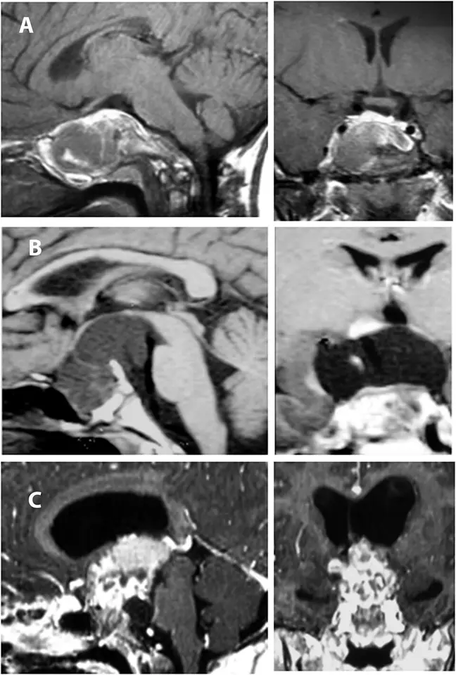

DX.10 — Obésité hypothalamique acquise
Une lésion de l'hypothalamus déclenche une prise de poids rapide qui résiste aux mesures habituelles. La cause la plus étudiée est le craniopharyngiome et son traitementS28S29. Le rang 🚩 E4 rappelle trois dangers immédiatsS30S33. La tumeur peut menacer la vision. L'insuffisance corticotrope peut tuer en quelques heures. Les troubles du sodium peuvent être graves. Les obésités génétiques ou syndromiques relèvent du DX.8, l'hypercortisolisme du DX.9 et les médicaments qui font grossir du DX.2.
1. Définition
Le document d'experts de Müller et collaborateurs (Endocrine Journal, 2026) définit l'obésité hypothalamique acquiseS28. C'est une prise de poids rapide, cliniquement pertinente et persistante, due à une atteinte de l'hypothalamus. Les causes sont le craniopharyngiome, les autres lésions expansives, la neurochirurgie, l'irradiation et le traumatisme crânien. Ce texte réunit des experts du Japon, d'Europe puis de Corée ; ce n'est pas une recommandation de société savanteS28. Ses critères chiffrés figurent au point 8.
2. Épidémiologie (Suisse, puis Europe)
À Berne, sa prévalence passe de 4 % au diagnostic de craniopharyngiome à 45 % après un suivi médian de 9,8 ansS2. Le craniopharyngiome compte 0,5 à 2,0 nouveaux cas par million d'habitants et par anS29S30. En Allemagne, l'incidence liée aux tumeurs et à leur traitement atteint 0,07 à 0,17 cas pour 100 000 personnes par anS31. La prise de poids survient surtout dans les 12 mois suivant la lésion, puis l'indice de masse corporelle (IMC) reste sur un plateau élevéS28.
3. Physiopathologie
La lésion détruit les noyaux hypothalamiques qui intègrent la leptine et l'insuline ; la satiété disparaît. Le tonus parasympathique domine ; il augmente l'insuline et le stockage des graisses. Le tonus sympathique baisse ; il réduit la dépense d'énergieS28S29. Les déficits hormonaux, la somnolence et l'inactivité entretiennent ensuite l'obésitéS30.
Chaque perturbation possède une exploration qui la montre et une stratégie qui la corrige ; le tableau de corrélation les relie.
4. Démarche diagnostique
Le médecin traite d'abord ce qui tue vite : tumeur évolutive, crise surrénalienne et dysnatrémieS30S31S33. Il cherche ensuite les causes fréquentes de prise de poids qui imitent ou aggravent l'obésité hypothalamiqueS28. Quatre diagnostics différentiels se discriminent par un signe ou un examen précis. L'ordre suit la gravité, puis la fréquence chez le patient déjà lésé.
5. Anamnèse ciblée et drapeaux rouges
L'anamnèse date la lésion et la compare au début de la prise de poids, car les critères exigent une hausse dans les 12 moisS28. Elle cherche les signes des cinq domaines du syndrome hypothalamique et revoit chaque substitution hormonaleS28S29. Les drapeaux rouges imposent une action le jour même.
6. Examen physique ciblé, région par région
Le médecin mesure le poids, la taille et l'IMC à chaque visite, puis les reporte sur une courbeS28. Il examine ensuite chaque région : constantes, yeux, système nerveux, peau, puberté et hydratation.
7. Approche syndromique
7.1 Syndrome hypothalamique. Il associe des signes alimentaires, comportementaux, thermiques et du sommeilS28S29.
7.2 Syndrome tumoral sellaire et suprasellaire. Il réunit l'hypertension intracrânienne et l'atteinte des voies optiquesS29.
7.3 Insuffisance antéhypophysaire. Elle combine des déficits corticotrope, thyréotrope, gonadotrope et somatotrope ; 80 à 90 % des patients opérés d'un craniopharyngiome ont un panhypopituitarismeS30.
7.4 Déficit en AVP, avec ou sans adipsie. Il se manifeste par une polyurie hypotonique, une polydipsie et parfois une hypernatrémieS3S30.
7.5 Syndrome métabolique et complications. Il comprend hyperinsulinisme, dyslipidémie, hypertension et stéatoseS30.
8. Diagnostic positif et critères
Les critères d'experts de Müller et collaborateurs (2026) exigent trois conditions cumulativesS28. La première est une lésion hypothalamique visible à l'IRM, due à un événement traumatique ou à une maladie, notamment oncologique. La deuxième est une hausse de l'IMC rapide, persistante et significative, suivie tous les 3 moisS28. La troisième est une obésité constituéeS28. Plusieurs éléments ne suffisent pas au diagnostic.
9. Examens complémentaires
9.a Gold standard. Aucun examen unique ne pose le diagnostic ; il repose sur des critères cliniques et radiologiquesS28. L'IRM cérébrale sert de référence pour montrer la lésion.
9.b Première intention. Le bilan comprend l'IRM, un bilan hypophysaire complet, la balance hydrique et sodée, l'examen ophtalmologique et un bilan métaboliqueS2S29S32. L'examen ophtalmologique mesure l'acuité à l'échelle de Snellen et le champ visuel par périmétrie de GoldmannS2.
9.c Alternatives. Si l'IRM est impossible, l'ESE accepte une tomodensitométrie (TDM) cérébraleS32. La TDM sans contraste complète l'IRM pour voir les calcificationsS29.
9.d Deuxième intention. Les tests dynamiques confirment un déficit corticotrope, somatotrope ou en AVPS3S32S33. La calorimétrie, la polysomnographie et les questionnaires précisent le profil du syndrome hypothalamiqueS28S30S31.
10. Arbre décisionnel
L'arbre commence par les urgences, puis vérifie les critères de 2026 et écarte les autres causesS28S33.
- Si un patient sous hydrocortisone présente hypotension, vomissements, diarrhée ou trouble de conscience → hydrocortisone 100 mg par voie intraveineuse ou intramusculaire, sans attendre la biologieS13S33. Le remplissage suit (point 11.B).
- Si des céphalées, des vomissements ou une baisse visuelle apparaissent → demander une IRM en urgence et un avis neurochirurgicalS29S31.
- Si une polyurie hypotonique s'associe à une hypernatrémie ou à une absence de soif → doser la natrémie, tenir un bilan entrées-sorties et donner la desmopressine (point 11.B)S3S30.
- Si une hyponatrémie survient sous desmopressine → arrêter la desmopressine et contrôler le sodiumS16.
- Si la prise de poids débute dans les 12 mois suivant une lésion hypothalamique visible à l'IRM → mesurer l'IMC tous les 3 mois pendant 24 moisS28.
- Si la hausse atteint au moins 5 % chez l'adulte ou 1,0 SDS chez l'enfant, persiste 24 mois et aboutit à une obésité → poser le diagnostic d'obésité hypothalamique acquise (point 8)S28.
- Si la hausse suit un corticoïde, un antidépresseur ou un changement du mode de vie → écarter ces causes d'abord (DX.2, DX.9)S28.
- Si la T4L baisse de plus de 20 % ou reste basse avec une TSH normale → évoquer une hypothyroïdie centrale ; vérifier le cortisol avant la lévothyroxineS19S30.
- Si la prise de poids suit une irradiation après plus de 12 mois → le diagnostic reste possibleS28.
- Si l'obésité date d'avant 5 ans sans lésion acquise → évoquer une obésité génétique ou syndromique (DX.8)S1.
- Si le diagnostic est posé → confier le patient à une équipe multidisciplinaire expérimentée, optimiser les substitutions et traiter l'obésité (point 11)S28S31.
11. Prise en charge selon les recommandations suisses
La guidance suisse de 2026 encadre l'obésité en généralS1. Les doses suivent l'information professionnelle suisse (AIPS) ; les sources européennes complètent le reste.
11.A But. À court terme, le médecin prévient la mort par crise surrénalienne, dysnatrémie ou tumeurS30S33. À moyen terme, il stabilise puis réduit le poids, en visant d'abord le comportement alimentaire et la dépense d'énergie. Il optimise aussi les substitutions hormonales, le sommeil, le risque cardiovasculaire et la vie socialeS31. Des repères chiffrés guident l'évaluation.
11.B Moyens. Les urgences suivent une conduite chronologiqueS13S33. L'ordre des substitutions compte : le cortisol passe avant la thyroxineS19. Le traitement associe hydrocortisone, desmopressine, lévothyroxine, somatropine et testostérone selon les déficits. Contre l'obésité, il dispose des agonistes du récepteur du GLP-1, d'options hors information professionnelle et de la chirurgie bariatrique. Il y ajoute les mesures non médicamenteuses, le volet social et les situations spéciales.
11.C Surveillance. Le médecin surveille selon un calendrier le poids, l'IRM, le sodium, les hormones et les complicationsS28S29S30.
11.D Pronostic, sortie et recherche. L'IMC plafonne haut et la mortalité reste élevée (point 2)S28S30. Les critères de sortie se règlent un par un. La recherche de 2026 vise surtout la voie MC4RS30S34.
12. Prévention
La prévention primaire épargne l'hypothalamus lors du traitement de la tumeurS29S31. La prévention secondaire repère la hausse de l'IMC dès les premiers moisS28. La prévention tertiaire évite les crises surrénaliennes, les dysnatrémies et les complications métaboliquesS4S30S33. Ces trois niveaux répondent au risque du point 2 : la prise de poids se joue dans les 12 premiers moisS28.
13. Points clés
- Une prise de poids qui débute dans les 12 mois suivant une lésion hypothalamique visible à l'IRM évoque l'obésité hypothalamique acquise.
- Le diagnostic exige une hausse de l'IMC d'au moins 5 % chez l'adulte ou de 1,0 SDS chez l'enfant, persistant 24 mois, et une obésité constituée.
- Chez un patient substitué qui vomit ou devient hypotendu, le médecin injecte 100 mg d'hydrocortisone avant tout examenS14.
- Le cortisol se substitue avant la thyroxine, et la T4L guide la lévothyroxine, pas la TSH.
- Une prise de poids rapide sous desmopressine fait d'abord doser le sodium.
- En Suisse, le setmélanotide n'a pas cette indication ; la Commission européenne l'a autorisée le 30.04.2026, dès 4 ans.
14. Pièges et questions fréquentes à l'examen fédéral suisse
- Un patient avec un champ visuel binoculaire horizontal de 100° peut-il conduire une voiture ? Non. L'annexe 1 de l'OAC exige au moins 120° pour le groupe 1S9.
Sources
Doses : information professionnelle Swissmedic (AIPS), version téléchargée le 08.10.2026, documents liés lus le 30.10.2026.
- [S1] Gerber PA, Collet TH, Favre L et al. « Swiss obesity clinical practice guidance ». Société suisse d'endocrinologie et de diabétologie (SSED), Swiss Association for the Study of Metabolism and Obesity (ASEMO-SAMO), SMOB, Association obésité de l'enfant et de l'adolescent (AKJ). Swiss Med Wkly 2026;156:5415. https://www.smob.ch/wp-content/uploads/2026/05/20260519_Swiss-obesity-clinical-practice-guidance-smw-2026-5415.pdf
- [S2] Andereggen L, Hess B, Andres RH et al. « A ten-year follow-up study of treatment outcome of craniopharyngiomas ». Inselspital Berne. Swiss Med Wkly 2018;148:w14521. https://smw.ch/index.php/smw/article/download/2445/3782/11208
- [S3] Refardt J, Christ-Crain M. « Copeptin-based diagnosis of diabetes insipidus ». Hôpital universitaire de Bâle. Swiss Med Wkly 2020;150:w20237. https://smw.ch/index.php/smw/article/download/2792/4514/13767
- [S4] Centre hospitalier universitaire vaudois (CHUV), Unité d'endocrinologie, diabétologie et obésité pédiatrique. « Traitement de l'insuffisance surrénalienne par hydrocortisone ». Fiche 2020. https://www.chuv.ch/fileadmin/sites/dedop/APA/Fiche_insuffisance_surrenal.definitive.pdf
- [S5] Swiss Multidisciplinary Obesity Society (SMOB). « Directives pour le traitement chirurgical de l'obésité », en vigueur dès le 1.7.2023. https://www.smob.ch/wp-content/uploads/2026/04/SMOB-Directives-2023-07-01-Fr.pdf
- [S6] Office fédéral de la santé publique (OFSP). Annexe 1 de l'OPAS (RS 832.112.31), édition du 1er juillet 2026, « Traitement chirurgical de l'adiposité ». https://www.bag.admin.ch/dam/fr/sd-web/ImdyprmtRKyP/OPAS%20Annexe%201%20pour%20le%201er%20juillet%202026.pdf
- [S7] OFSP. Liste des spécialités, interface publique : Wegovy®, Mounjaro®, Alkindi®, Saxenda®, Imcivree, Ritaline®. https://epl.bag.admin.ch/api/sl/public/medicinal-products?page=1&size=5&search=Wegovy
- [S8] Fedlex. Ordonnance sur l'assurance-maladie (OAMal), RS 832.102, art. 71a, 71b et 71d, état le 22 octobre 2026. https://fedlex.data.admin.ch/filestore/fedlex.data.admin.ch/eli/cc/1995/3867_3867_3867/20261022/fr/html/fedlex-data-admin-ch-eli-cc-1995-3867_3867_3867-20261022-fr-html.html
- [S9] Fedlex. Ordonnance réglant l'admission à la circulation routière (OAC), RS 741.51, art. 7 et annexe 1, état le 1er janvier 2026 ; texte de l'annexe 1 identique dans la version qui entrera en vigueur le 1.1.2027. https://fedlex.data.admin.ch/filestore/fedlex.data.admin.ch/eli/cc/1976/2423_2423_2423/20260101/fr/html/fedlex-data-admin-ch-eli-cc-1976-2423_2423_2423-20260101-fr-html-3.html
- [S10] Fedlex. Loi fédérale sur la circulation routière (LCR), RS 741.01, art. 15d, état le 1er juillet 2026. https://fedlex.data.admin.ch/filestore/fedlex.data.admin.ch/eli/cc/1959/679_705_685/20260701/fr/html/fedlex-data-admin-ch-eli-cc-1959-679_705_685-20260701-fr-html.html
- [S11] Fedlex. Loi fédérale sur l'assurance-invalidité (LAI), RS 831.20, art. 13, état le 1er janvier 2026. https://fedlex.data.admin.ch/filestore/fedlex.data.admin.ch/eli/cc/1959/827_857_845/20260101/fr/html/fedlex-data-admin-ch-eli-cc-1959-827_857_845-20260101-fr-html-8.html
- [S12] Fedlex. Ordonnance du DFI concernant les infirmités congénitales (OIC-DFI), RS 831.232.211, annexe, ch. 385, état le 1er janvier 2022 (dernière version consolidée trouvée). https://fedlex.data.admin.ch/filestore/fedlex.data.admin.ch/eli/cc/2021/708/20220101/fr/html/fedlex-data-admin-ch-eli-cc-2021-708-20220101-fr-html-9.html
- [S13] AIPS. Solu-CORTEF®, Pfizer AG, n° 23533, mise à jour octobre 2025. https://files.refdata.ch/simis-public-prod/MedicinalDocuments/521df69c10204956ac5a90a438143ee8-fr.html
- [S14] AIPS. Hydrocortisone Galepharm, Galepharm AG, n° 57970, mise à jour août 2025. https://files.refdata.ch/simis-public-prod/MedicinalDocuments/c3cc49cf817d4688a56a03bed83acfcd-fr.html
- [S15] AIPS. Alkindi®, EffRx Pharmaceuticals SA, n° 68226, mise à jour février 2025. https://files.refdata.ch/simis-public-prod/MedicinalDocuments/4826b59b3dad46f8b79c6eefb2260568-fr.html
- [S16] AIPS. MINIRIN® comprimés, Ferring AG, n° 49002, mise à jour février 2024. https://files.refdata.ch/simis-public-prod/MedicinalDocuments/990ab754348a4f8d94751e5724e45d61-fr.html
- [S17] AIPS. Minirin® Melt comprimés sublinguaux, Ferring AG, n° 57151, mise à jour février 2025. https://files.refdata.ch/simis-public-prod/MedicinalDocuments/88602f7e7ee340759ea24435fd73d5c5-fr.html
- [S18] AIPS. MINIRIN® solution injectable, Ferring AG, n° 43585, mise à jour février 2024. https://files.refdata.ch/simis-public-prod/MedicinalDocuments/d90c1549e6a94a19a6ac5d5bd44f570f-fr.html
- [S19] AIPS. Euthyrox®, Merck (Schweiz) AG, n° 54949, mise à jour février 2023. https://files.refdata.ch/simis-public-prod/MedicinalDocuments/f5352e0e4d9b44c1a66a6f1e69061d8d-fr.html
- [S20] AIPS. Genotropin®, Pfizer AG, n° 50823 et 61421, mise à jour mai 2026. https://files.refdata.ch/simis-public-prod/MedicinalDocuments/cceaab4cfa42443184bb02c3dd85c11e-fr.html
- [S21] AIPS. Testogel® 50 mg, Vifor (International) AG, n° 56779, mise à jour juillet 2026. https://files.refdata.ch/simis-public-prod/MedicinalDocuments/bbebcc32052d406cb0cacfdaaed53327-fr.html
- [S22] AIPS. Wegovy® Multi FixDose, Novo Nordisk Pharma AG, n° 68798, août 2026. https://files.refdata.ch/simis-public-prod/MedicinalDocuments/f7517ead352b46298c4a97e4d9a282cb-fr.html
- [S23] AIPS. MOUNJARO®, Eli Lilly (Suisse) SA, n° 68726 (information commune aux n° 68726, 69415 et 69696), juillet 2026. https://files.refdata.ch/simis-public-prod/MedicinalDocuments/5b67983ad28f48e6b668f55a98e331d5-fr.html
- [S24] AIPS. Saxenda®, Novo Nordisk Pharma AG, n° 65899, avril 2025. https://files.refdata.ch/simis-public-prod/MedicinalDocuments/db7b17ca176a4aac94d1090fee72d0b6-fr.html
- [S25] AIPS. IMCIVREE 10 mg/ml, Rhythm Pharmaceuticals Switzerland GmbH, n° 69694, mise à jour avril 2026. https://files.refdata.ch/simis-public-prod/MedicinalDocuments/a1acfda7d9584684a4ccb9974a85aa90-fr.html
- [S26] AIPS. Ritaline®/-LA, Novartis Pharma Schweiz AG, n° 20736 (comprimés) et 55931, mise à jour mars 2026. https://files.refdata.ch/simis-public-prod/MedicinalDocuments/dc6ecda01c504ccc8773dbac1dbc0de6-fr.html
- [S27] AIPS. Attentin, Salmon Pharma GmbH, n° 67475. https://files.refdata.ch/simis-public-prod/MedicinalDocuments/56eb396124d948bf81802a52b5651f05-fr.html
- [S28] Müller HL, Tanaka T, Hasegawa T et al. « Diagnostic criteria for acquired hypothalamic obesity — international expert guidance document ». Endocr J 2026. doi:10.1507/endocrj.ej25-0408. https://www.ebi.ac.uk/europepmc/webservices/rest/PMC12895118/fullTextXML
- [S29] Müller HL. « Management of Acquired Hypothalamic Obesity After Childhood-Onset Craniopharyngioma — A Narrative Review ». Biomedicines 2025;13:1016. https://www.ebi.ac.uk/europepmc/webservices/rest/PMC12109346/fullTextXML
- [S30] Müller HL. « Quality of life, morbidity, mortality, and long-term prognosis after craniopharyngioma ». Front Endocrinol 2026. https://www.ebi.ac.uk/europepmc/webservices/rest/PMC13278930/fullTextXML
- [S31] Müller HL, Bartels UK, Denzer C et al. (panel d'Allemagne, d'Autriche et de Suisse). « Expert meeting report: epidemiology and management of acquired hypothalamic obesity ». Front Endocrinol 2026. https://www.ebi.ac.uk/europepmc/webservices/rest/PMC13124477/fullTextXML
- [S32] Pasquali R, Casanueva F, Haluzik M et al. « European Society of Endocrinology Clinical Practice Guideline: Endocrine work-up in obesity ». Eur J Endocrinol 2020;182:G1–G32. https://scholarlypublications.universiteitleiden.nl/download/1887/3181535/1?col=81522199330002711
- [S33] Beuschlein F, Else T, Bancos I et al. « European Society of Endocrinology and Endocrine Society Joint Clinical Guideline: Diagnosis and Therapy of Glucocorticoid-induced Adrenal Insufficiency ». J Clin Endocrinol Metab 2024 ; Eur J Endocrinol 2024. https://www.ebi.ac.uk/europepmc/webservices/rest/PMC11180513/fullTextXML
- [S34] Miller JL, van Santen HM, Phillips SA et al., TRANSCEND Trial Group. « Setmelanotide for the Treatment of Acquired Hypothalamic Obesity ». N Engl J Med 2026;395:138–150 ; résumé lu. https://europepmc.org/article/MED/42418774
- [S35] Agence européenne des médicaments (EMA), comité des médicaments à usage humain (CHMP). « Summary of opinion — Imcivree », 26.03.2026, et page de l'évaluation européenne (procédure du 30.04.2026). https://www.ema.europa.eu/en/documents/smop/chmp-post-authorisation-summary-positive-opinion-imcivree-vr-0000288021_en.pdf ; https://www.ema.europa.eu/en/medicines/human/EPAR/imcivree ; information produit (annexe I, mise à jour le 27.05.2026, rubriques 4.2 et 4.4) : https://www.ema.europa.eu/en/documents/product-information/imcivree-epar-product-information_en.pdf ; Commission européenne, registre de l'Union, Imcivree EU/1/21/1564, décision C(2026) 3032 du 30.04.2026 : https://ec.europa.eu/health/documents/community-register/html/h1564.htm
- [S36] Biagetti B, Ramon-Krauel M, Gómez JJL et al. « Hypothalamic syndrome and acquired hypothalamic obesity: from fragmented care to integrated multidisciplinary management ». Pituitary 2026 ; résumé lu. doi:10.1007/s11102-026-01743-0
- [S37] European Association for the Study of the Liver (EASL), European Association for the Study of Diabetes (EASD), European Association for the Study of Obesity (EASO). « Clinical Practice Guidelines on the management of metabolic dysfunction-associated steatotic liver disease (MASLD) ». Obes Facts 2024;17:374–444. https://www.ebi.ac.uk/europepmc/webservices/rest/PMC11299976/fullTextXML
- [S38] Office fédéral de la statistique (OFS). « Enquête suisse sur la santé 2022 : surpoids et obésité », communiqué du 21.11.2024. https://dam-api.bfs.admin.ch/hub/api/dam/assets/32669823/master
- [S39] Radu AM, Carsote M, Dumitrascu MC, Sandru F. « Acanthosis Nigricans: Pointer of Endocrine Entities ». Diagnostics 2022;12:2519 ; résumé lu. https://www.ebi.ac.uk/europepmc/webservices/rest/search?query=PMCID:PMC9600076&resultType=core&format=json
- [S40] AIPS. Glucophage® comprimés pelliculés, Merck (Schweiz) AG, n° 26061. https://files.refdata.ch/simis-public-prod/MedicinalDocuments/bc2323e8a4ba4f4aa787cfc5152d7e13-fr.html
- [S41] AIPS. Sandostatine®, Novartis Pharma Schweiz AG, n° 49137. https://files.refdata.ch/simis-public-prod/MedicinalDocuments/2322483d319a4166a4d4136284942f28-fr.html
- [S42] AIPS. Gadovist® 1,0 Solution injectable, Bayer (Schweiz) AG, n° 54423, mise à jour juin 2025. https://files.refdata.ch/simis-public-prod/MedicinalDocuments/625370c3d353435c8fea3b1c451790f3-fr.html
- [S43] Mushtaq T, Ali SR, Boulos N et al. « Emergency and perioperative management of adrenal insufficiency in children and young people: British Society for Paediatric Endocrinology and Diabetes consensus guidance ». Arch Dis Child 2023;108:871–878. https://www.ebi.ac.uk/europepmc/webservices/rest/PMC10646833/fullTextXML
- [S45] AIPS. Synacthen® (tétracosactide), ampoules 0,25 mg/1 ml, Atnahs Pharma Switzerland AG, n° 31723, mise à jour juin 2023 (test de 30 minutes : 0,25 mg i.m. ou i.v.). https://files.refdata.ch/simis-public-prod/MedicinalDocuments/166adf4ccf4143f88dbb064bb2373b7e-fr.html — consulté le 11.11.2026.
- [S44] AIPS d'œstradiol : Progynova®/Progynova® mite, Bayer (Schweiz) AG, n° 33149, octobre 2022 ; Estrofem® 1 mg N/2 mg N, Novo Nordisk Pharma AG, n° 40050, juillet 2022 ; Oestrogel®, Vifor (International) Inc., n° 46638, juin 2026 ; Estradot®, Sandoz Pharmaceuticals SA, n° 55976, mars 2026 (rubriques Indications et Posologie). https://files.refdata.ch/simis-public-prod/MedicinalDocuments/4f9434f76e0543b9978401d75a2a9058-fr.html ; …/0c30e38976334441a432c529a6a2d996-fr.html ; …/254bc786ac394558be3cb92614405328-fr.html ; …/7855dfd143684160a7a9405f918802cb-fr.html
- [S45] OFSP et Commission fédérale pour les vaccinations (CFV). Plan de vaccination suisse 2026, état février 2026. https://www.bag.admin.ch/dam/fr/sd-web/Oj0BSN-w-Ggs/Plan%20de%20vaccination%20suisse_2026_FR_Web_final.pdf
Contenu établi à partir des sources citées ; non validé cliniquement par un médecin.
Origine et portée de la définition
Les experts ont siégé à Yokohama en octobre 2024, lors du 57e congrès de la Société japonaise d'endocrinologie pédiatriqueS28. Ils ont fondé leur texte sur une revue de la littérature depuis 2000 et sur leur avis quand les données manquaientS28. La réunion a été financée par Rhythm Pharmaceuticals, qui commercialise le setmélanotideS28.
Un panel d'Allemagne, d'Autriche et de Suisse (Francfort, novembre 2025) reprend ces critères sans processus formel de consensusS31. Ce panel demande de reconnaître l'obésité hypothalamique acquise comme une maladie distincte, au même titre que l'hypothyroïdie centraleS31.
Le « diabète insipide central » s'appelle désormais « déficit en arginine-vasopressine (AVP) », abrégé AVP-D en anglais (arginine vasopressin deficiency)S29S30. La guidance suisse de 2026 range les lésions inflammatoires, tumorales, infectieuses, vasculaires et kystiques de l'hypothalamus parmi les causes d'obésité secondaireS1. Elle y ajoute la chirurgie et l'irradiation cérébralesS1.
Situations frontières
| Notion | Ce qui la définit | Pourquoi elle diffère |
|---|---|---|
| Syndrome hypothalamique | Terme parapluie : troubles alimentaires, du comportement, du sommeil, de la température et déficits hormonaux [S28][S29] | Il n'est pas synonyme d'obésité hypothalamique ; certains patients n'ont pas d'obésité [S28][S36] |
| Obésité hypothalamique génétique ou syndromique | Déficit en pro-opiomélanocortine (POMC), en récepteur de la leptine (LEPR), syndromes de Prader-Willi et de Bardet-Biedl [S28] | Le trouble est congénital et sans lésion acquise ; il relève du DX.8 |
| Syndrome ROHHAD (obésité rapide avec dysfonction hypothalamique, hypoventilation et dysrégulation autonome) | Il survient sans cause connue [S28] | Il n'a pas de lésion visible ; le panel le juge sous-diagnostiqué [S31] |
| Surdosage en hydrocortisone | Prise de poids excessive et croissance ralentie sous substitutionS15 | L'information professionnelle d'Alkindi® y voit le signe d'un traitement « trop fortement dosé »S15 |
| Obésité commune après un cancer | Prise de poids tardive, progressive, sans lésion hypothalamique | Les experts exigent une hausse rapide, débutant dans les 12 mois suivant la lésion [S28] |
Distribution : Suisse, puis Europe
| Population | Donnée | Source |
|---|---|---|
| Berne, 32 patients opérés de 1980 à 2011 | Atteinte hypothalamique 25 % ; âge médian au diagnostic 33,6 ans (3 à 70) ; obésité hypothalamique 4 % → 45 % ; déficit en AVP 13 % → 66 % | [S2] |
| Allemagne, 5,42 millions d'assurés (2010–2020) | Environ 80 nouveaux cas liés aux tumeurs par an ; 1 262 cas prévalents en 2019 | [S31] |
| Allemagne, toutes causes (2019/2020) | Environ 2 500 cas : 60 % tumoraux, 22 % micro-lésions non précisées, 18 % traumatismes crâniens | [S31] |
| Sexe | Forme tumorale : 59 % de femmes ; forme post-traumatique : 73 % d'hommes | [S31] |
| Craniopharyngiome adamantinomateux | Surtout avant 18 ans ; âge médian au diagnostic 5 à 9 ans | [S29][S30] |
| Craniopharyngiome papillaire | Presque exclusivement adulte ; âge médian 55 à 69 ans | [S29][S30] |
| Craniopharyngiome avec atteinte hypothalamique | Environ 50 % développent une obésité hypothalamique ; obésité sévère chez 40 à 60 % des survivants à long terme | [S28][S29][S30] |
| Cohorte de 709 enfants | IMC > +3 SDS (score de déviation standard) chez 45,4 % au dernier suivi | [S30] |
Le panel allemand, autrichien et suisse juge ces chiffres sous-estimés, surtout chez l'adulte. Les données d'assurance ne saisissent ni l'hyperphagie ni l'atteinte visible à l'imagerie par résonance magnétique (IRM)S31.
Enjeux de santé publique
La première année, un patient allemand cumule en moyenne 4,6 hospitalisations de plus qu'un témoin de même IMCS31. Le surcoût annuel atteint 19 935 € la première année et 10 745 € la deuxièmeS31. Les substitutions hormonales à vie en sont un moteur majeurS31. En Suisse, l'ordonnance du Département fédéral de l'intérieur concernant les infirmités congénitales (OIC-DFI) cite le craniopharyngiome au chiffre 385S12. La surveillance vise les patients déjà lésés (point 12).
Histoire naturelle chez l'individu
- Avant le diagnostic de craniopharyngiome, l'IMC monte légèrement ; il reste le plus souvent normalS28.
- La première année après la chirurgie, l'IMC gagne en moyenne +2 SDSS28.
- Une lésion chirurgicale postérieure fait gagner +3,2 SDS en 36 mois, soit 50 à 80 % du poidsS28.
- À long terme, l'IMC se stabilise vers +5 SDS sans nouvelle hausseS28.
- Après irradiation, la prise de poids peut commencer plus tard que 12 moisS28.
Facteurs de risque
Le sexe féminin, l'atteinte hypothalamique et un IMC initial supérieur à +2 SDS prédisent l'obésitéS28S30. L'IMC des parents au diagnostic y contribueS28S30. Une chirurgie radicale dans un centre à faible volume aggrave le risqueS28S31. À Berne, le déficit en AVP postopératoire prédit seul l'obésité hypothalamique (rapport de cotes 15,2 ; intervalle de confiance à 95 % 1,3 à 174,8)S2. Cet intervalle très large rend l'estimation imprécise.
Mortalité et pronostic vital
La mortalité globale après craniopharyngiome est trois à cinq fois celle de la population. Les rapports standardisés de mortalité vont de 2,88 à 9,28S30. La mortalité cardiovasculaire est 3 à 19 fois plus élevée, surtout chez la femmeS30. Chez l'enfant, la survie atteint environ 62 % à 20 ansS30. L'atteinte hypothalamique réduit la survie à 20 ansS30. Les décès tardifs viennent des récidives, des déficits endocriniens, des crises convulsives, des complications cérébrovasculaires et des troubles métaboliquesS30.
Anatomie utile
L'hypothalamus forme la paroi et le plancher du troisième ventricule ; le chiasma optique le borde en avant. Les noyaux paraventriculaire, ventromédian et dorsomédian et l'aire hypothalamique latérale contrôlent la prise alimentaire. Les régions des noyaux arqué et paraventriculaire libèrent les hormones de libération dans le système porte, au niveau de l'éminence médiane. Les noyaux paraventriculaire et supraoptique envoient l'AVP et l'ocytocine vers la posthypophyse. Le centre de la soif siège dans la lame terminaleS29.
Voies de la faim et de la satiété
Les voies orexigènes (neuropeptide Y, ghréline, orexines) stimulent la faim. Les voies anorexigènes (insuline, leptine, adiponectine, facteur neurotrophique dérivé du cerveau) la freinentS29. Une lésion du noyau arqué, du noyau ventromédian ou du noyau du tractus solitaire rompt cet équilibreS29S30. L'expression du récepteur de la mélanocortine de type 4 (MC4R) est maximale dans les noyaux paraventriculaire et supraoptiqueS31. La lésion reste souvent partielle ; des neurones résiduels gardent une fonctionS31.
Amorce, développement, installation, maintien
- Amorce. La tumeur comprime ou envahit l'hypothalamus ; la chirurgie, l'irradiation ou le traumatisme ajoutent leurs lésionsS28S29.
- Développement. Les signaux de la leptine et de l'insuline ne sont plus perçus ; une résistance à ces hormones apparaîtS28S29. L'appétit et la satiété se déséquilibrent ; l'hyperphagie suitS28.
- Installation. L'hyperactivité vagale stimule la sécrétion d'insuline ; la graisse s'accumuleS29. La baisse du tonus sympathique diminue la dépense énergétique totaleS29S30. Les patients bougent moins que des témoins de même IMCS30.
- Maintien. Une fois l'obésité sévère installée, la perte de poids devient très difficileS28S30. La somnolence diurne, le manque de mélatonine et la fatigue réduisent l'activitéS30. Une substitution thyroïdienne insuffisante ou une hydrocortisone en excès ajoutent du poidsS15S30.
Complications et pronostic
Le syndrome métabolique, la stéatose hépatique pouvant évoluer en cirrhose et la maladie cardiovasculaire en découlent. Le déficit en AVP survient surtout après une atteinte postérieureS30. Il marque la lésion, prédit l'obésité et altère la qualité de vieS30S2. Une adipsie associée expose à des dysnatrémies graves et à des hospitalisations répétéesS30.
Lésion ou perturbation → exploration → thérapeutique (mécanisme)
| Lésion ou perturbation | Exploration qui la montre | Thérapeutique qui la corrige (mécanisme) |
|---|---|---|
| Destruction des noyaux hypothalamiques ; voie MC4R interrompue | IRM et gradation de l'atteinte (point 9) [S29] | Setmélanotide : il active les récepteurs MC4R résiduels et restaure la satiété [S31][S34]. Il n'a pas cette indication en SuisseS25 |
| Hyperinsulinisme d'origine vagale, résistance à l'insuline | Glycémie, hémoglobine glyquée (HbA1c) [S37] | Agonistes du récepteur du GLP-1 (peptide apparenté au glucagon de type 1) : ils agissent sur le tronc cérébral, en contournant l'hypothalamus lésé [S31]S22 |
| Baisse du tonus sympathique et de la dépense d'énergie | Calorimétrie indirecte (dépense énergétique de repos) [S30][S31] | Stimulants centraux : ils augmentent le métabolisme et coupent l'appétit [S29] ; usage hors information professionnelle pour le poidsS26S27 |
| Déficit corticotrope | Cortisol matinal, test au tétracosactide (point 9) [S33] | Hydrocortisone à la plus faible dose efficace : elle remplace le cortisol sans faire grossirS15[S30] |
| Déficit thyréotrope | Thyroxine libre (T4L), pas la thyréostimuline (TSH) seule [S30] | Lévothyroxine titrée sur la T4L : elle évite la prise de poids due à une substitution insuffisanteS19[S30] |
| Déficit en hormone de croissance (GH) | Facteur de croissance analogue à l'insuline de type 1 (IGF-1) et test dynamique [S32]S20 | Somatropine : elle améliore la composition corporelle sans guérir l'obésité hypothalamique [S30] |
| Déficit gonadotrope | Hormone lutéinisante (LH), hormone folliculostimulante (FSH), testostérone ou œstradiol [S32] | Testostérone chez l'homme : elle réduit la masse grasse et augmente la masse maigre [S30]S21 |
| Déficit en AVP, avec ou sans adipsie | Natrémie, osmolalités, diurèse, copeptine [S3] | Desmopressine et horaire fixe des boissons : elles restaurent l'antidiurèse et protègent du sodium extrêmeS16[S30] |
| Somnolence diurne, narcolepsie secondaire, apnées | Polysomnographie [S30] | Méthylphénidate dans la narcolepsie de l'adulte : il réduit la somnolence diurneS26[S30] |
Graves à exclure d'abord
| Rang | Hypothèse grave | Signe ou examen qui tranche | Piège | Conduite immédiate |
|---|---|---|---|---|
| 🚩 a | Craniopharyngiome révélé ou récidivant, hydrocéphalie | Céphalées, vomissements, baisse visuelle ; IRM cérébrale [S29][S31] | Le diagnostic survient souvent des années après les premiers signes [S29] | Demander une IRM en urgence et un avis neurochirurgical |
| 🚩 b | Crise surrénalienne (déficit corticotrope) | Hypotension ou choc avec nausées, vomissements, fatigue sévère, fièvre ou trouble de conscience [S33] | La crise est un diagnostic clinique ; l'hyponatrémie n'est pas obligatoire [S33] | Injecter l'hydrocortisone par voie parentérale sans attendre la biologie (point 11.B) [S33] |
| 🚩 c | Hypernatrémie du déficit en AVP adipsique | Polyurie hypotonique sans soif, natrémie élevée [S3][S30] | Le patient ne réclame pas à boire ; la soif ne protège plus [S3] | Doser la natrémie, tenir un bilan entrées-sorties, donner la desmopressine (point 11.B) |
| 🚩 d | Hyponatrémie sous desmopressine | Céphalées, nausées, vomissements, œdème ou prise de poids ; convulsions et coma dans les cas gravesS16 | La rétention d'eau fait grossir et imite l'obésitéS16 | Interrompre la desmopressine et doser le sodiumS16 |
L'hypothermie et l'hyperthermie relèvent de la dysrégulation thermique du syndrome hypothalamiqueS28.
Diagnostics différentiels discriminants
| Diagnostic | Signe ou examen qui tranche | Piège classique | Conduite si positif |
|---|---|---|---|
| Hypercortisolisme iatrogène (DX.9, DX.2) | La dose dépasse les besoins ; l'enfant prend trop de poids et grandit moins viteS15 | Doser le cortisol sous glucocorticoïdes : l'European Society of Endocrinology (ESE) le déconseille (R.3.5) [S32] | Réduire vers la plus faible dose efficaceS15 |
| Prise de poids médicamenteuse (DX.2) | La prise de poids suit un antidépresseur ou un corticoïde [S28] | Attribuer d'emblée le poids à l'antidépresseur ; l'obésité hypothalamique cause aussi des symptômes dépressifs [S28] | Revoir la liste des médicaments ; garder les exclusions des experts [S28] |
| Obésité génétique ou syndromique (DX.8) | L'obésité et l'hyperphagie débutent avant 5 ans, sans lésion acquise [S1] | Une obésité antérieure à la lésion oriente vers une autre cause ; les experts jugent le début de la prise de poids [S28] | Demander un avis génétique (DX.8) |
| Hypothyroïdie centrale non substituée (DX.5) | La T4L est basse ou baisse de plus de 20 % ; la TSH reste normale ou basse [S30] | Une TSH normale rassure à tort [S30] | Corriger d'abord le cortisol, puis la thyroxine (point 11.B)S19 |
L'insuffisance cardiaque (DX.6) et le syndrome néphrotique (DX.7) font aussi grossir par rétention d'eau. La desmopressine est contre-indiquée en cas d'insuffisance cardiaque suspectée ou connueS16.
Questions clés et raison physiopathologique
| Question | Pourquoi elle change la décision |
|---|---|
| Quand ont eu lieu le diagnostic, la chirurgie, l'irradiation ou le traumatisme ? | La hausse doit débuter dans les 12 mois ; après irradiation, elle peut être retardée [S28] |
| Quels poids et quelles tailles antérieurs sont documentés ? | Les experts jugent le début de la prise de poids, pas le début de l'obésité [S28] |
| L'enfant grandit-il moins vite ? A-t-il des céphalées ou des troubles visuels ? | Ces signes annoncent tôt un craniopharyngiome [S31] |
| Le patient a-t-il une faim intense, des accès de boulimie, une recherche de nourriture ? | L'hyperphagie soutient le diagnostic, sans être constante [S28] |
| Boit-il beaucoup, urine-t-il la nuit, ou au contraire n'a-t-il jamais soif ? | Le déficit en AVP marque l'atteinte postérieure ; l'adipsie expose à l'hypernatrémie [S3][S30] |
| Dort-il le jour, ronfle-t-il, s'endort-il en conduisant ? | Hypersomnie et narcolepsie secondaire sont fréquentes ; l'aptitude à conduire est en jeu [S30][S9] |
| A-t-il trop chaud ou trop froid sans raison, des mains froides à des moments inhabituels ? | La dysrégulation thermique est un critère de soutien [S28] |
| Montre-t-il des colères, des compulsions, une accumulation d'objets ? | Ce sont les troubles du comportement du syndrome hypothalamique [S29] |
| Quelles doses d'hydrocortisone, de lévothyroxine, de desmopressine et d'hormones sexuelles prend-il ? | Un excès d'hydrocortisone ou un manque de thyroxine font grossirS15[S30] |
| Quels antidépresseurs ou corticoïdes reçoit-il ? | Ces médicaments figurent parmi les exclusions [S28] |
| Quel est l'IMC des parents ? | Une prédisposition familiale accroît le risque d'obésité sévère [S28][S30] |
| Ses règles, sa libido, sa puberté sont-elles normales ? | Le déficit gonadotrope aggrave la composition corporelle [S30] |
Contexte suisse : l'adulte conducteur doit satisfaire aux exigences visuelles de l'annexe 1 de l'ordonnance réglant l'admission à la circulation routière (OAC)S9.
Drapeaux rouges actionnables
| Drapeau rouge | Ce qu'il impose tout de suite |
|---|---|
| Céphalées nouvelles, vomissements, baisse de la vision | Demander une IRM en urgence et un avis neurochirurgical [S29][S31] |
| Vomissements, diarrhée, fièvre ou malaise chez un patient sous hydrocortisone | Injecter l'hydrocortisone sans attendre et appeler le 144 [S4][S33] |
| Confusion, convulsion ou coma sous desmopressine | Arrêter la desmopressine et doser la natrémie en urgenceS16 |
| Polyurie sans soif, somnolence, fièvre inexpliquée | Doser la natrémie et l'osmolalité le jour même [S3][S30] |
| Perte visuelle brutale sous sémaglutide | Demander un avis ophtalmologique ; arrêter le sémaglutide si une neuropathie optique ischémique antérieure non artéritique (NOIAN) est confirméeS22 |
| Endormissement au volant | Arrêter la conduite et évaluer l'aptitude [S9][S10] |
| Idées suicidaires sous traitement amaigrissant | Réévaluer le bénéfice et le risque ; l'information professionnelle du tirzépatide le demandeS23 |
Normal attendu, technique, pathologique et piège
| Région | Normal attendu | Technique | Pathologique | Piège |
|---|---|---|---|---|
| Anthropométrie | IMC adulte 18,5 à 24,9 kg/m² ; chez l'enfant, valeurs de Cole selon l'âge et le sexe [S38] | Peser et mesurer la taille tous les 3 mois après la lésion ; exprimer l'IMC en SDS chez l'enfant [S28] | Hausse de l'IMC d'au moins 5 % (adulte) ou d'au moins 1,0 SDS (enfant) [S28] | L'IMC au diagnostic du craniopharyngiome ne prédit pas l'obésité en pratique [S28] |
| Constantes | Pression et température normales | Mesurer la pression couchée puis debout ; répéter la température | Hypotension ou choc : crise surrénalienne [S33] ; hypo- ou hyperthermie : dysrégulation [S28] | La température est difficile à mesurer de façon fiable [S28] |
| Yeux | Acuité et champ visuel normaux | Mesurer l'acuité à l'échelle de Snellen et le champ visuel par périmétrie de Goldmann, comme à Berne [S2] | À Berne : déficit d'acuité 44 % et du champ visuel 59 % au diagnostic [S2] | Une baisse visuelle sous sémaglutide peut être une NOIAN ou une récidiveS22[S29] |
| Fond d'œil | Papilles à bords nets | Pratiquer l'ophtalmoscopie si céphalées, troubles visuels ou vomissementsS20 | Œdème papillaire : hypertension intracrânienne ; l'information professionnelle de la somatropine le signaleS20 | Un œdème papillaire sous somatropine impose d'envisager l'arrêtS20 |
| Système nerveux | Vigilance et comportement adaptés | Observer le patient ; poser une échelle de somnolence à l'anamnèse | Somnolence diurne, troubles du comportement [S29][S30] | La fatigue a d'autres causes après un cancer, dont l'irradiation [S29] |
| Peau | Peau sans pigmentation acquise | Inspecter la nuque, les aisselles et les plis | Acanthosis nigricans : marqueur d'insulinorésistance [S39] ; hyperpigmentation sous setmélanotide [S34] | L'hyperpigmentation est l'effet indésirable le plus fréquent du setmélanotide [S34] |
| Puberté et croissance | Stades de Tanner adaptés à l'âge | Noter les stades de Tanner et la vitesse de croissance sur la courbe | Puberté précoce centrale ou retardée [S28] ; croissance ralentie [S31] | Une croissance ralentie sous hydrocortisone signe un surdosageS15 |
| Hydratation | Muqueuses humides, pas de soif extrême | Peser chaque jour ; tenir le bilan des boissons et des urines [S30] | Déshydratation avec polyurie : déficit en AVP ; prise de poids rapide sous desmopressine : rétention d'eauS16 | Ces patients nécessitent un pesage régulierS16[S30] |
Exemple (calcul dérivé) : un adulte de 1,70 m pèse 69,4 kg avant la chirurgie, soit un IMC de 24,0 kg/m². Une hausse de 5 % porte l'IMC à 25,2 kg/m², soit 72,8 kg. Un gain de 3,5 kg suffit donc au critère adulte de hausse significative.
7.1 Syndrome hypothalamique
| Type | Signe et définition | Geste de recherche | Mécanisme |
|---|---|---|---|
| Fonctionnel | Hyperphagie : faim intense, accès de boulimie [S28] | Interroger le patient ; le questionnaire d'hyperphagie de Dykens reste rarement utilisé [S28] | Perte des signaux anorexigènes [S29] |
| Fonctionnel | Hypophagie : maigreur jusqu'à la cachexie, surtout avant la chirurgie [S28] | Consulter la courbe de poids préopératoire | Déséquilibre des voies de la faim et de la satiété [S29] |
| Fonctionnel | Troubles du comportement : colère, compulsions, accumulation [S28] | Interroger le patient et l'entourage | Atteinte des circuits hypothalamiques du comportement [S28] |
| Fonctionnel | Troubles du sommeil : apnées, hypersomnie, somnolence diurne, fatigue [S29] | Interroger sur le sommeil ; prescrire une polysomnographie | Dérèglement circadien, mélatonine basse [S30] |
| Physique | Hypothermie, hyperthermie, extrémités froides ou chaudes à des moments inhabituels [S28] | Mesurer la température à plusieurs reprises | Atteinte de la thermorégulation hypothalamique [S28] |
| Physique | Hausse rapide de l'IMC [S28] | Tracer l'IMC tous les 3 mois | Hyperinsulinisme et baisse de la dépense d'énergie [S29] |
Un score à sept domaines (IMC, hyper- ou hypophagie, comportement, sommeil, température, hypophyse, imagerie) a été proposéS31. Il classe 52,5 % de 120 enfants opérés comme atteints du syndrome hypothalamiqueS28.
7.2 Syndrome tumoral
| Type | Signe et définition | Geste de recherche | Mécanisme |
|---|---|---|---|
| Fonctionnel | Céphalées, nausées : signes non spécifiques de pression intracrânienne [S29] | Interroger sur l'horaire et l'évolution | Masse et kystes qui élèvent la pression [S29] |
| Fonctionnel | Baisse de l'acuité visuelle [S29] | Mesurer l'acuité à l'échelle de Snellen [S2] | Compression des nerfs et du chiasma optiques [S29] |
| Physique | Déficit du champ visuel : présent chez environ la moitié des enfants au diagnostic [S29] | Tester le champ visuel par confrontation, puis périmétrie [S2] | Compression du chiasma [S29] |
| Physique | Ralentissement de la croissance [S29][S31] | Tracer la courbe de taille | Déficit en GH [S29] |
Après la chirurgie, 33 à 47 % des déficits visuels initiaux récupèrentS29.
7.3 Insuffisance antéhypophysaire
| Type | Signe et définition | Geste de recherche | Mécanisme |
|---|---|---|---|
| Fonctionnel | Céphalées, nausées, faible tolérance au stress [S30] | Interroger sur les maladies intercurrentes | Manque de cortisol par déficit en hormone adrénocorticotrope (ACTH) [S30] |
| Physique | Hypotension, choc disproportionné au déclencheur [S33] | Mesurer la pression couchée puis debout | Hypovolémie et vasoplégie de la crise surrénalienne [S33] |
| Fonctionnel | Fatigue, prise de poids [S30] | Interroger ; doser la T4L | Hypothyroïdie centrale [S30] |
| Fonctionnel | Troubles du cycle, baisse de la libido [S30] | Interroger sur la vie sexuelle | Déficit gonadotrope [S30] |
| Physique | Puberté retardée, masse grasse accrue, anémie chez l'homme [S30] | Noter les stades de Tanner ; prescrire un hémogramme | Manque d'hormones sexuelles [S30] |
| Physique | Masse musculaire réduite, adiposité abdominale [S30] | Mesurer le tour de taille | Déficit en GH [S30] |
À Berne, entre le diagnostic et le dernier suivi, le déficit en GH passe de 9 % à 63 %S2. Le déficit en ACTH passe de 31 % à 84 % et le déficit en TSH de 25 % à 81 %S2.
7.4 Déficit en arginine-vasopressine
| Type | Signe et définition | Geste de recherche | Mécanisme |
|---|---|---|---|
| Fonctionnel | Polyurie : plus de 50 mL d'urine hypotonique par kilo et par 24 heures [S3] | Recueillir les urines de 24 heures | Manque d'AVP au tube collecteur [S3] |
| Fonctionnel | Polydipsie : plus de 3 litres de boissons par jour [S3] | Tenir le bilan des boissons | Compensation par la soif [S3] |
| Fonctionnel | Adipsie : absence de soif [S3][S30] | Demander directement ; doser la natrémie | Atteinte du centre de la soif [S3] |
| Physique | Hypernatrémie sévère chez le patient adipsique [S3] | Doser la natrémie | Pertes d'eau non compensées [S3] |
Exemple (calcul dérivé) : chez un enfant de 30 kg, la polyurie commence au-delà de 1 500 mL par 24 heures. Chez un adulte de 70 kg, elle commence au-delà de 3 500 mL.
7.5 Complications métaboliques
| Type | Signe et définition | Geste de recherche | Mécanisme |
|---|---|---|---|
| Physique | Hypertension artérielle : pression ≥ 130/85 mmHg ou traitée, critère métabolique de l'European Association for the Study of the Liver, de l'European Association for the Study of Diabetes et de l'European Association for the Study of Obesity (EASL–EASD–EASO, 2024) [S37] | Mesurer la pression au repos à plusieurs reprises | Hyperinsulinisme et obésité [S30] |
| Physique | Acanthosis nigricans : peau épaissie et pigmentée de la nuque, des aisselles et des articulations des doigts [S39] | Inspecter ces sites | Insulinorésistance [S39] |
| Fonctionnel | Ronflement, apnées, somnolence [S29] | Interroger ; prescrire une polysomnographie | Obésité et dérèglement central [S29][S30] |
| Biologique | Stéatose hépatique pouvant évoluer en cirrhose [S30] | Calculer le score FIB-4 (Fibrosis-4, point 9) | Stéatose métabolique [S30][S37] |
Critères de l'obésité hypothalamique acquise (Müller et al., Endocrine Journal 2026)
| Critère | Adulte | Enfant |
|---|---|---|
| a) Lésion | Événement traumatique ou maladie (oncologique) entraînant une lésion ou une atteinte hypothalamique détectable à l'IRM [S28] | |
| b) Hausse rapide | Elle survient durant les 12 premiers mois après la chirurgie ou le diagnostic [S28] | |
| b) Hausse persistante | Elle dure 24 mois après la chirurgie [S28] | |
| b) Hausse significative | IMC en hausse d'au moins 5 % [S28] | IMC en hausse d'au moins 1,0 SDS [S28] |
| b) Surveillance | Suivi clinique et anthropométrique tous les 3 mois [S28] | |
| c) Obésité constituée | IMC ≥ 25 ou ≥ 30 kg/m² selon les caractéristiques ethniques ; ≥ 25 kg/m² chez l'adulte d'Asie de l'Est [S28] | IMC ≥ +2,0 SDS [S28] |
Critères minimaux, critères de soutien et exceptions
- Le minimum diagnostique associe une obésité de niveau défini et une anomalie hypothalamique à l'imagerieS28.
- Un déficit hypophysaire, une dysrégulation thermique et une hyperphagie soutiennent le diagnosticS28.
- L'IRM peut rester normale ; une obésité avec d'autres signes hypothalamiques ou un hypopituitarisme fait alors évoquer le diagnosticS28.
- Après irradiation, la hausse peut débuter après 12 moisS28.
- Les experts demandent de réévaluer ces critères après 2 à 3 ansS28.
- Ces critères reposent sur 24 séries et 13 observations de faible qualité, complétées par l'avis des auteursS28.
Gradation de l'atteinte hypothalamique à l'IRM
| Système | Grade 0 | Grade 1 | Grade 2 |
|---|---|---|---|
| Puget, avant la chirurgie | Pas d'atteinte | Tumeur qui touche ou déplace l'hypothalamus | Hypothalamus envahi, non identifiable [S29] |
| Puget, après la chirurgie | Pas de lésion | Lésion négligeable ou reliquat qui déplace l'hypothalamus | Lésion significative ; plancher du troisième ventricule non identifiable [S29] |
| Müller, lésion postopératoire | Pas de lésion | Lésion antérieure respectant les corps mamillaires et l'hypothalamus postérieur | Lésion antérieure, des corps mamillaires et postérieure [S29] |
Usage clinique : une lésion postérieure de grade 2 annonce le risque d'obésité le plus élevéS28S30. Les experts retiennent pourtant toute atteinte, car une lésion antérieure isolée peut aussi conduire à une obésité sévèreS28.
Exemple (calcul dérivé) : un enfant passe de +0,8 à +2,1 SDS en 10 mois après sa chirurgie. Il gagne 1,3 SDS et dépasse +2,0 SDS ; les critères b et c sont remplis si la hausse persiste 24 mois.
Ce qui ne suffit pas au diagnostic
- Une lésion à l'IRM seule ne suffit pas : toutes les lésions ne conduisent pas à l'obésitéS28.
- L'hyperphagie seule ne suffit pas ; elle manque chez certains patients qui grossissentS28.
- L'IMC au diagnostic du craniopharyngiome n'est pas un marqueur pratique ; les valeurs des deux groupes se chevauchentS28.
- Les critères du syndrome hypothalamique ne suffisent pas au diagnostic d'obésité hypothalamique acquiseS28.
- Une prise de poids sous corticoïdes ou antidépresseurs, ou après un changement du mode de vie, doit être exclueS28.
Deux définitions différentes
L'essai TRANSCEND a inclus des patients d'au moins 4 ans avec un IMC ≥ 95e percentile avant 18 ans, ou ≥ 30 kg/m² à l'âge adulteS34. Il exigeait en plus un antécédent de tumeur, de lésion ou de blessure hypothalamiqueS34. Cette définition d'essai n'exige pas la cinétique des critères de 2026 ; elle ne les remplace pas.
IRM cérébrale : indication, prescription, interprétation
Indication : toute suspicion de craniopharyngiome et toute prise de poids rapide avec hyperphagie, signes visuels ou hormonauxS29S32. Prescription : IRM de tout le cerveau avec la région sellaire et suprasellaire. Elle comprend des séquences T2 coronales, axiales et sagittales en haute résolution 3D et des séquences T1 volumiquesS29. Un produit de contraste intraveineux est recommandé pour la première IRMS29.
| Résultat | Signification | Conduite |
|---|---|---|
| Masse sellaire et suprasellaire, solide et kystique, unifocale | Aspect habituel du craniopharyngiome [S29] | Orienter vers une équipe multidisciplinaire expérimentée [S29] |
| Lésion postopératoire de grade 2 | Risque maximal d'obésité hypothalamique [S28][S29] | Planifier un suivi anthropométrique trimestriel (point 11.C) |
| Hypersignal T2 hypothalamique élevé après la chirurgie | Il s'associe à la hausse de l'IMC et au syndrome hypothalamique [S30] | Renforcer la surveillance du poids [S30] |
| IRM normale avec obésité et déficits hypophysaires | Le diagnostic reste possible [S28] | Demander un avis endocrinologique |
Les publications s'appuient sur une relecture par un neuroradiologue expérimenté, rarement disponible en routineS28.
IRM de craniopharyngiomes. IRM T1 avec gadolinium, coupes sagittales et coronales

Lisez d'abord seul ce cliché (irm de craniopharyngiomes) : cherchez vous-même le signe.
La copie annotée (irm de craniopharyngiomes) numérote les repères décrits ci-dessous.
- 1. A : tumeur solide sellaire et suprasellaire, distincte de l’hypothalamus (grade 0).
- 2. B : tumeur surtout kystique qui déforme l’hypothalamus sans l’envahir (grade 1).
- 3. C : tumeur solide qui monte vers le troisième ventricule ; les ventricules latéraux sont dilatés.
Ce que l'image décide. L’atteinte hypothalamique visible à l’IRM oriente l’exérèse et annonce le risque d’obésité hypothalamiqueS28S29.

Bilan hypophysaire de l'ESE (2020) et interprétation
L'ESE propose, en cas de suspicion d'obésité hypothalamique, de doser T4L, TSH, LH, FSH, testostérone ou œstradiol, GH, IGF-1 et prolactineS32. Elle ajoute un test de stimulation à l'ACTH et un test de stimulation de la GH. Elle déconseille de doser l'IGF-1 et la GH en routine dans l'obésité ; elle les réserve à la suspicion d'hypopituitarisme (R.6.1, R.6.2)S32.
| Examen | Normal ou seuil | Signification | Conduite |
|---|---|---|---|
| Cortisol sérique entre 8 et 9 heures, sans glucocorticoïde depuis 24 heures | > 300 nmol/L : récupération de l'axe ; 150 à 300 nmol/L : zone intermédiaire ; < 150 nmol/L : axe non récupéré [S33] | Seuils établis pour l'insuffisance surrénalienne induite par les glucocorticoïdes [S33]. Piège : la grossesse et les œstrogènes oraux élèvent la protéine porteuse du cortisol (CBG) et le cortisol mesuré [S33] | Zone intermédiaire ou basse : poursuivre la dose physiologique et répéter [S33] |
| T4L | Dans les valeurs de référence du laboratoire | Une T4L dans le bas de la norme ou en baisse de plus de 20 % évoque une hypothyroïdie centrale [S30] | Donner la lévothyroxine après correction du cortisolS19[S30] |
| TSH | Dans les valeurs de référence | Une TSH normale n'exclut pas l'hypothyroïdie centrale [S30] | Interpréter avec la T4L [S30] |
| LH, FSH, testostérone ou œstradiol | Selon l'âge et le sexe | Des gonadotrophines normales ou basses avec stéroïdes sexuels bas signent un déficit central [S2] | Prescrire une substitution ou une induction pubertaire [S30] |
| IGF-1 | Selon l'âge et le sexe | Un IGF-1 bas oriente vers un déficit en GH [S32] | Faire un test dynamique (9.d) [S32] |
| Prolactine | Selon le laboratoire | À Berne, l'hyperprolactinémie touche 25 % des patients au diagnostic et 41 % au dernier suivi [S2] | Interpréter avec l'imagerie |
Balance hydrique et sodée
Le médecin prescrit la natrémie, l'osmolalité plasmatique et urinaire, la diurèse de 24 heures et le poids quotidienS3S30. Il élimine d'abord une diurèse osmotique, typiquement par glycosurieS3.
| Résultat | Signification | Conduite |
|---|---|---|
| Diurèse > 50 mL/kg/24 h d'urine hypotonique et boissons > 3 L/jour | Syndrome polyuro-polydipsique [S3] | Distinguer déficit en AVP et polydipsie primaire (9.d) [S3] |
| Polyurie hypotonique avec hypernatrémie et absence de soif | Déficit en AVP adipsique probable [S3][S30] | Fixer l'horaire des boissons et donner la desmopressine (point 11.B) [S30] |
| Hyponatrémie sous desmopressine | Rétention d'eau, intoxication à l'eauS16 | Interrompre la desmopressine jusqu'au rétablissementS16 |
| Copeptine basale ≥ 21,4 pmol/L sans soif préalable | Diabète insipide néphrogénique [S3] | Ce n'est pas un déficit central [S3] |
Bilan métabolique et osseux (EASL–EASD–EASO 2024)
| Examen | Normal | Seuil et signification | Conduite |
|---|---|---|---|
| HbA1c | < 39 mmol/mol (< 5,7 %) | 39 à 47 mmol/mol : prédiabète ; ≥ 48 mmol/mol (≥ 6,5 %) : diabète de type 2 [S37] | Traiter les complications métaboliques [S30] |
| Glycémie à jeun | < 5,6 mmol/L | 5,6 à 6,9 mmol/L : prédiabète ; ≥ 7,0 mmol/L : diabète [S37] | Traiter de même |
| Triglycérides, cholestérol des lipoprotéines de haute densité (HDL) | Triglycérides < 1,7 mmol/L | Triglycérides ≥ 1,7 mmol/L ; HDL ≤ 1,0 mmol/L (homme) ou ≤ 1,3 mmol/L (femme) [S37] | Ces valeurs constituent des facteurs de risque métabolique [S37] |
| Score FIB-4 | < 1,3 : faible risque de fibrose avancée | > 1,3 (> 2,0 après 65 ans) : risque accru ; 1,3 à 2,67 : élastographie ou un an d'intervention [S37] | Répéter tous les 1 à 3 ans si < 1,3 ; il manque environ 10 % des fibroses avancées [S37] |
| Absorptiométrie biphotonique à rayons X (DXA) | Score T ≥ −1 | Score T de −1 à −2,5 : ostéopénie ; < −2,5 : ostéoporose [S2] | À Berne, 53 % des patients testés avaient une densité osseuse pathologique [S2] |
Situations particulières
| Situation | Alternative | Source |
|---|---|---|
| Calcifications à documenter | Faire une TDM limitée à la selle, sans contraste intraveineux, en épargnant les cristallins | [S29] |
| Dispositif incompatible avec l'IRM | Faire une TDM cérébrale ; l'ESE propose « Brain CT or MRI » | [S32] |
| Grossesse | Gadovist® 1,0 (gadobutrol, n° 54423) : Seulement si un produit de contraste est absolument nécessaire. L'allaitement peut continuer | S42 |
| Débit de filtration glomérulaire < 30 mL/min/1,73 m² | Risque de fibrose systémique néphrogénique : produit seulement après une évaluation soigneuse du rapport bénéfice/risque | S42 |
| Nourrisson de moins d'un an | Gadobutrol après évaluation attentive, 0,1 mmol/kg au plus, une dose par examen ; pas de nouvelle injection avant 7 jours | S42 |
| Test à la desmopressine chez le nourrisson | Seulement à l'hôpital et sous surveillance étroite | S18 |
| Nausées ou vomissements pendant le test à l'arginine | Résultats à interpréter avec prudence ; le vomissement stimule l'AVP | [S3] |
Tests dynamiques : prescription et interprétation
| Test | Prescription | Seuil | Signification et conduite |
|---|---|---|---|
| Test au tétracosactide (ACTH 1-24) | 250 µg par voie intraveineuse, au moins 24 heures après la dernière dose de glucocorticoïde ; cortisol à 30 et 60 minutes [S33]S45. Le test n'explore que la réponse directe de la surrénale [S33] | Pic < 500 nmol/L, selon la méthode de dosage [S33] | Insuffisance surrénalienne primaire ou secondaire [S33] |
| Test de stimulation de la GH | Au moins un test dynamique si l'IGF-1 est testé [S32] | Selon le laboratoire | Déficit en GH ; somatropine si indiquéeS20 |
| Déficit en GH persistant connu (adulte) | IGF-1 après au moins 4 semaines sans GHS20 | Score IGF-1 < −2S20 | Preuve suffisante d'un déficit prononcé, sans test de stimulationS20 |
| Perfusion de NaCl hypertonique à 3 % | Bolus puis perfusion adaptée au poids jusqu'à une natrémie de 150 mmol/L ; natrémie rapide obligatoire [S3] | Copeptine > 4,9 pmol/L [S3] | Au-dessus : polydipsie primaire ; au-dessous : déficit central ; précision 97 % [S3] |
| Perfusion d'arginine | Copeptine à 60 minutes [S3] | 3,8 pmol/L [S3] | Précision de 93 % pour séparer déficit central et polydipsie primaire [S3] |
| Copeptine après chirurgie sellaire | Dans les 12 heures [S3] | < 2,5 pmol/L ; > 30 pmol/L [S3] | < 2,5 : valeur prédictive positive de 81 % pour un déficit ; > 30 : valeur prédictive négative de 95 % [S3] |
| Test de concentration à la desmopressine | Adulte : 4 µg de Minirin® solution injectable ; boissons ≤ 0,5 L de 1 heure avant à 8 heures aprèsS18 | Référence adulte : 800 à 1 000 mOsm/kgS18 | Forte hausse de l'osmolalité et baisse nette du volume urinaire : déficit centralS18 |
Le test de restriction hydrique classique n'atteint qu'une précision de 77 % dans l'étude de référenceS3.
Autres examens de deuxième intention
| Examen | Indication | Résultat attendu dans l'obésité hypothalamique |
|---|---|---|
| Calorimétrie indirecte | Préciser la dépense énergétique de repos [S30][S31] | Dépense de repos réduite [S30] |
| Polysomnographie | Somnolence diurne, ronflement, apnées [S30] | Endormissements rapides en sommeil paradoxal : hypersomnie ou narcolepsie secondaire [S30] |
| Questionnaire d'hyperphagie de Dykens | Objectiver l'hyperphagie [S28] | Rarement utilisé en pratique [S28] |
| Mélatonine salivaire | Somnolence diurne [S30] | Taux matinaux et nocturnes bas, liés à l'obésité et à la somnolence [S30] |
Repères chiffrés du but
| Horizon | Repère | Source |
|---|---|---|
| Minutes | Injecter l'hydrocortisone par voie parentérale dès la suspicion de crise surrénalienne | [S33] |
| Jours | La natrémie reste stable avec un horaire fixe des boissons et une dose individuelle de desmopressine | [S30] |
| 16 semaines | Le remboursement du sémaglutide ou du tirzépatide exige une perte ≥ 5 % si IMC ≥ 28 et < 35 kg/m² ; ≥ 7 % si IMC ≥ 35 kg/m² | [S7] |
| 10 mois | La perte totale doit atteindre ≥ 10 % (IMC ≥ 28 et < 35) ou ≥ 12 % (IMC ≥ 35) | [S7] |
| 52 semaines | Dans l'essai TRANSCEND, l'IMC baisse de 16,5 % sous setmélanotide et monte de 3,3 % sous placebo ; 80 % des patients traités perdent au moins 5 % d'IMC | [S31][S34] |
Urgence — conduite chronologique
Crise surrénalienne de l'adulte.
- Minute 0. Le médecin reconnaît une hypotension ou un choc avec nausées, vomissements, fatigue sévère, fièvre ou trouble de conscienceS33. Le traitement prime sur la recherche de la causeS33.
- Minutes 0 à 5. Il injecte 100 mg d'hydrocortisone par voie intraveineuse ou intramusculaire (ESE/ES 2024)S33S14. Solu-Cortef® (n° Swissmedic 23533) est indiqué dans l'« Insuffisance corticosurrénalienne aiguë », mais l'AIPS ne fixe aucune dose propre à la crise : divergence écriteS13. Elle préfère la voie intraveineuse en urgence et fixe la vitesse : jusqu'à 100 mg en 30 secondes au moinsS13.
- Minutes 0 à 30. Il commence aussitôt un remplissage rapide par NaCl 0,9 % (ou équivalent) par voie intraveineuseS33. Il cherche le déclencheur : infection, maladie aiguë, traumatisme, chirurgie, effort intense, arrêt brutal du traitementS33.
- Heures 1 à 24. Il poursuit par 200 mg d'hydrocortisone sur 24 heures en perfusion continue, ou 50 mg par voie intraveineuse ou intramusculaire toutes les 6 heuresS33S14. Ce schéma dure jusqu'à la guérison clinique et l'avis de l'endocrinologue. Chez le patient de poids très élevé, l'ESE admet des doses plus fortesS33.
- Heures 48 à 72. Il revient à la voie orale dès que l'état le permetS13. L'AIPS écrit : « généralement, il ne dépasse pas 48-72 heures »S13. Si la forte dose doit durer, elle propose un corticostéroïde moins rétenteur de sodium, comme la méthylprednisolone, « afin d'éviter une hypernatrémie »S13.
À domicile, un patient qui vomit mais reste stable s'injecte 100 mg par voie intramusculaire ; il peut répéter après 6 heuresS33S13. S'il ne s'améliore pas, il est hospitaliséS33. Le Centre hospitalier universitaire vaudois (CHUV) demande d'avoir toujours Solu-Cortef® à domicile et d'appeler le 144S4.
Enfant. Alkindi® impose la voie parentérale en cas de stress intense ou de vomissementsS15. Solu-Cortef® indique : « Ne pas administrer des doses inférieures à 25 mg par jour »S13. L'AIPS de Solu-CORTEF® ne donne pas de dose pédiatrique d'urgence. La British Society for Paediatric Endocrinology and Diabetes (BSPED, 2023) donne l'hydrocortisone par voie intramusculaire ou intraveineuse : 25 mg avant 1 an, 50 mg de 1 à 5 ans, 100 mg dès 6 ansS43S13. Elle admet aussi 2 mg/kg (maximum 100 mg) par voie intraveineuse, répétés toutes les 6 heures ; l'enfant stable reçoit 1 mg/kg (maximum 50 mg) toutes les 6 heuresS43S13. Si la glycémie est < 3 mmol/L, l'enfant reçoit 2 mL/kg de glucose à 10 % ; en cas de choc, il reçoit 10 mL/kg de NaCl 0,9 %, à répéter si besoinS43. Divergence : pour une maladie sans vomissement, la BSPED donne 30 mg/m²/jour par voie orale en quatre prises ; l'AIPS d'Alkindi® double ou triple la dose habituelleS15S43. L'équipe choisit.
Déficit en AVP postopératoire ou adipsique. Le médecin dose la natrémie de façon rapprochée et tient un bilan entrées-sorties avec un poids quotidienS30. Une copeptine < 2,5 pmol/L dans les 12 heures annonce le déficit (point 9.d)S3. Si la voie orale est insuffisante, il donne Minirin® solution injectable (n° 43585) par voie intraveineuse ou intramusculaire : adulte 1 à 4 µg une à deux fois par jourS18. Il fixe ensuite un horaire des boissonsS30.
Hyponatrémie sous desmopressine. Il interrompt la desmopressine « jusqu'à rétablissement complet du patient ». L'AIPS précise : interrompre la desmopressine et réduire les apports liquidiens si l'hyponatrémie est asymptomatique.. En cas d'hyponatrémie symptomatique, le patient peut recevoir en plus du NaCl isotonique ou hypertonique en perfusion. « En cas d'œdème cérébral, une admission immédiate en service de soins intensifs est requise. »S16
Céphalées, vomissements ou baisse visuelle. Il demande une IRM en urgence et un avis neurochirurgicalS29S31.
Chirurgie programmée sous anesthésie générale. Il donne 100 mg d'hydrocortisone par voie intraveineuse à l'induction, puis 200 mg sur 24 heuresS33S14. Après une chirurgie simple, il reprend la voie orale à dose augmentée pendant 48 heures, par exemple 40 mg d'hydrocortisone par jour en trois prisesS33S14. Divergence : l'AIPS de Solu-Cortef® donne d'autres paliers selon l'envergure de l'intervention (fenêtre Hydrocortisone)S13. L'équipe choisit.
Ordre du traitement et pourquoi
- Cortisol d'abord. Euthyrox® est contre-indiqué en cas de « troubles de la fonction surrénalienne non traités ». Même compensé, un trouble surrénalien impose d'abord la substitution glucocorticoïdeS19.
- Thyroxine ensuite. Le médecin cherche la cause d'une hypothyroïdie secondaire avant de la substituerS19.
- Desmopressine sur un terrain corrigé. Minirin® demande d'exclure ou de traiter une insuffisance surrénale ou thyroïdienne avant de commencerS16.
- Somatropine sous surveillance du cortisol. Elle peut démasquer un hypoadrénalisme central latentS20.
- Traitement de l'obésité. Il commence tôt, car l'obésité sévère installée régresse malS28S30.
- Chirurgie bariatrique. Elle vient après l'échec du traitement conservateur, selon les règles suissesS5S6.
Hydrocortisone (glucocorticoïde de substitution)
L'hydrocortisone appartient aux glucocorticoïdes et est identique au cortisolS4. Les autres principes de la classe (prednisone, dexaméthasone) apparaissent dans les tableaux de stress de l'ESES33.
| Spécialité | Indication et dose AIPS | Contre-indications (texte AIPS) |
|---|---|---|
| Hydrocortisone Galepharm, comprimés sécables à 10 mg (n° 57970)S14 | « Insuffisance corticosurrénale primaire ou secondaire »S14. 10 à 20 mg par jour dans l'insuffisance surrénale chronique, parfois davantage, avec 4 à 6 g de chlorure de sodium ou un minéralocorticoïdeS14. Une à quatre prises, au cours d'un repasS14. Maladie générale : « la dernière dose administrée doit être doublée, ou éventuellement triplée »S14. | « Hypersensibilité au principe actif ou à l'un des excipients. » Au-delà de l'urgence et de la substitution seulement : ulcère digestif, ostéoporose sévère, antécédent psychiatrique, herpès (simplex, zona virémique, cornéen), varicelle, amibiase, mycose systémique, poliomyélite non bulbo-encéphalique, lymphome après BCG, glaucomeS14 |
| Alkindi®, granulés oraux 0,5 à 5 mg (n° 68226)S15 | Substitution de l'insuffisance surrénale de la naissance à moins de 18 ansS15. « 8 à 10 mg d'hydrocortisone/m2/jour pour les patients présentant une insuffisance surrénale », en trois ou quatre prisesS15. Stress modéré : doubler ou tripler la dose journalièreS15. | « Hypersensibilité au principe actif ou à l'un des excipients mentionnés à la rubrique «Composition». » Dysphagie ; prématuré pas encore nourri par voie orale.S15 |
| Solu-Cortef®, 100 et 250 mg (n° 23533)S13 | « Insuffisance corticosurrénalienne primaire ou secondaire. » « Insuffisance corticosurrénalienne aiguë. »S13. Doses suivant la dose initiale : voie intraveineuse ou intramusculaire « à des intervalles de 2, 4 ou 6 heures selon la réponse et l'état du patient »S13. Traitement au long cours exposé au stress : « lors d'affections générales: doubler, éventuellement tripler la dernière dose administrée »S13. Petites interventions : 200 mg par voie intraveineuse avant ; envergure moyenne : 100 mg avant, puis 100 mg toutes les 6 heures pendant 24 heures ; chirurgie majeure : 100 mg avant, puis toutes les 6 heures pendant au moins 72 heuresS13. | « Application intramusculaire en cas de purpura thrombopénique idiopathique. » « Administration épidurale. » « Administration intrathécale, sauf pour certaines chimiothérapies (voir «Indications/Possibilités d'emploi»). » Vaccins vivants sous doses immunosuppressives. « Hypersensibilité connue à la substance active ou à l'un des excipients selon la «Composition». »S13 |
Divergence. Müller suggère 6 à 8 mg/m²/jour chez l'enfant avec atteinte hypothalamique, car l'activité de la 11β-hydroxystéroïde déshydrogénase de type 1 y est accrueS30S15. L'AIPS d'Alkindi® indique 8 à 10 mg/m²/jour et admet des doses plus faibles s'il reste du cortisol endogèneS15. L'équipe tranche au cas par cas. Exemple (calcul dérivé) : pour 1,0 m², l'AIPS donne 8 à 10 mg/jour ; Müller propose 6 à 8 mg/jourS15.
Effets indésirables à expliquer. L'hydrocortisone peut augmenter l'appétit et le poidsS14. Chez l'enfant, une prise de poids excessive et une croissance ralentie signent un surdosageS15.
Pharmacocinétique utile. Le métabolisme de l'hydrocortisone ralentit en cas d'insuffisance hépatique sévère ou d'hypothyroïdie ; son effet augmenteS13S14. Sa demi-vie s'allonge pendant la grossesseS13.
Interactions. Les inducteurs ou inhibiteurs puissants du cytochrome P450 3A4 (CYP3A4) peuvent imposer un ajustementS15. Une crise myasthénique peut survenir avec la néostigmine ou la pyridostigmineS14.
Liste des spécialités. Alkindi® exige l'accord de l'assureur pour des doses fractionnées ≥ 5 mg ou plus de trois prises par jourS7S15.
Desmopressine (analogue de l'AVP)
Indication commune : diabète insipide central, polyurie et polydipsie après hypophysectomie ou chirurgie hypophysaireS16S17S18. Le médecin ajuste la dose sur le volume et l'osmolalité des urines ; il vise un sommeil suffisant et un bilan hydrique équilibréS16.
| Spécialité | Dose AIPS | Âges |
|---|---|---|
| MINIRIN® comprimés (n° 49002) | L'AIPS débute à 0,1 mg trois fois par jourS16 ; la moyenne vaut 0,2 à 1,2 mg/jourS16. Le plus souvent : 0,1 à 0,2 mg trois fois par jourS16 | Adultes, adolescents et enfants à partir de 3 ans ; « ne doivent pas être utilisés chez les patients de moins de 1 an »S16 |
| Minirin® Melt sublingual (n° 57151) | 60 µg trois fois par jour au départ ; 120 à 720 µg/jour ; entretien 60 à 120 µg trois fois par jourS17 | Dès 1 an ; avant 5 ans seulement sans risque d'aspirationS17 |
| MINIRIN® solution injectable, 4 µg/mL (n° 43585)S16S17 | Adultes : 1 à 4 µg une à deux fois par jour ; dès 1 an : 0,1 à 1 µg ; nourrissons : débuter à 0,05 µgS18 | Si la voie orale ou nasale est insuffisanteS18 |
Équivalence : 120 µg sublinguaux correspondent à 0,2 mg par voie oraleS17. La desmopressine n'est presque pas métabolisée par le foie ; la nourriture réduit son absorption, d'où une prise toujours à même distance des repasS16.
Contre-indications (comprimés, texte AIPS)S16.
- « Polydipsie primaire ou psychogène (avec diurèse > 40 ml/kg/24 h) »
- « Insuffisance cardiaque suspectée ou connue et autres maladies nécessitant un traitement par diurétiques »
- « Hyponatrémie »
- « Insuffisance rénale modérée ou sévère (clairance de la créatinine < 50 ml/min) »
- « Syndrome de sécrétion inappropriée d'hormone antidiurétique (SIADH) »
- Maladie de von Willebrand de type IIb sévère (facteur VIII à 5 %, anticorps anti-facteur VIII)
- « Hypersensibilité au principe actif ou à un excipient »
La forme injectable exclut aussi l'angor instable, l'insuffisance cardiaque connue ou présumée et toute pathologie qui exige un diurétiqueS18.
Mises en garde. Sans réduction des boissons, la desmopressine entraîne rétention d'eau et hyponatrémie. Le patient l'interrompt en cas de vomissements, diarrhée, fièvre, gastroentérite ou infection systémiqueS16. Après une gastrectomie longitudinale, l'absorption de la desmopressine orale peut baisserS29.
Lévothyroxine (hormone thyroïdienne)
Euthyrox® (n° 54949) : « Substitution d'hormones thyroïdiennes pour adultes et enfants en cas d'hypothyroïdie de toute origine »S19. Hypothyroïdie : dose initiale 25 à 50 µg/jour, augmentée de 25 à 50 µg toutes les 2 à 4 semaines ; entretien 100 à 200 µg/jourS19. Sujet âgé ou cardiaque : départ à 25 µgS19. La prise se fait le matin à jeun, au moins une demi-heure avant le petit-déjeuner. Dans l'hypothyroïdie, le traitement dure « le plus souvent à vie ». La demi-vie de la lévothyroxine est d'environ 7 jours chez le sujet sain et de 9 à 10 jours en cas d'hypothyroïdieS19.
Enfant : dès 12 ans, la dose est celle de l'adulteS19. De 6 à 12 ans, elle est de 100 à 150 µg/jour (4 à 5 µg/kg)S19. De 1 à 5 ans, elle est de 75 à 100 µg (5 à 6 µg/kg)S19.
Cible. Dans l'hypothyroïdie centrale, la T4L est maintenue dans la moitié moyenne à haute des valeurs normalesS30. L'AIPS contrôle la dose par la TSH, qui n'est pas fiable iciS19S30.
Contre-indications (texte AIPS)S19.
- « insuffisance cardiaque accompagnée d'une accélération de la fréquence cardiaque » ; « pancardite aiguë » ; « myocardite aiguë »
- « infarctus aigu du myocarde » ; « angine de poitrine »
- « troubles de la fonction hypophysaire non traités » ; « troubles de la fonction surrénalienne non traités »
- Hyperthyroïdie de toute origine, sauf en association à un thyréostatique
- Grossesse, en association à un thyréostatique
- « Hypersensibilité au principe actif ou à l'un des excipients conformément à la composition »
Mises en garde. « Les hormones thyroïdiennes ne doivent pas être utilisées dans un objectif de réduction pondérale ». L'orlistat peut provoquer une hypothyroïdieS19.
Somatropine (hormone de croissance recombinante)
Genotropin® (information commune aux n° 50823 et 61421) est indiqué chez l'enfant en cas de déficit démontré en hormone de croissanceS20. Chez l'adulte, il l'est en cas de déficit « à la suite d'une maladie hypothalamique ou hypophysaire »S20.
| Population | Dose AIPS (voie sous-cutanée) |
|---|---|
| Enfant, retard de croissance hypophysaire | 0,025 à 0,035 mg/kg/jour ou 0,7 à 1,0 mg/m²/jourS20 ; exemple (calcul dérivé) : 0,75 à 1,05 mg/jour pour 30 kg |
| Adulte, déficit débuté dans l'enfance | Reprise à 0,2 à 0,5 mg/jour, ajustée sur l'IGF-1S20 |
| Adulte, déficit débuté à l'âge adulte | 0,15 à 0,30 mg/jour au départ ; entretien rarement au-delà de 1,33 mgS20 |
| Plus de 60 ans | 0,1 à 0,2 mg/jour au départS20 |
Contre-indications (texte AIPS). « Enfants atteints d'un syndrome de Down, d'un syndrome de Bloom ou d'une anémie de Fanconi. » « Présence d'une tumeur active et/ou de lésions intracrâniennes actives, thérapie anticancéreuse en cours. » Patient gravement malade après chirurgie cardiaque ou abdominale, polytraumatisme ou insuffisance respiratoire aiguë. « Hypersensibilité connue à l'un des constituants de Genotropin (voir «Composition»). »S20
Durée. Chez l'adulte, la durée n'est pas définie ; un spécialiste réévalue le bénéfice chaque annéeS20.
Mises en garde. Le patient traité après un cancer est surveillé pour une récidive. Les survivants d'un cancer de l'enfance irradiés au crâne ont plus de seconds néoplasmes, surtout des méningiomes. La somatropine peut démasquer un hypoadrénalisme central et modifier la T4S20.
Apport des sources européennes. La GH ne guérit pas l'obésité hypothalamique ; elle améliore la composition corporelle et le profil métabolique. Chez le patient avec déficit confirmé, elle n'augmente pas le risque de récidive du craniopharyngiome. Müller n'impose aucun délai d'attente après la fin du traitement oncologiqueS30. L'AIPS la contre-indique pourtant en présence d'une tumeur ou d'une lésion intracrânienne activeS20 : l'équipe vérifie la stabilité tumorale. L'ESE déconseille la GH pour traiter l'obésité si la GH est normale (R.6.3)S32.
Testostérone (homme adulte)
Testogel® 50 mg (n° 56779) : substitution de l'hypogonadisme masculin de l'adulte confirmé par la clinique et la biologieS21. « La dose initiale recommandée est de 5 g de gel (correspondant à 50 mg de testostérone) », une fois par jourS21. Le maximum est de 10 g de gel (100 mg)S21. Un premier dosage a lieu après environ une semaine, le matin avant l'applicationS21.
Contre-indications (texte AIPS). « Présence connue ou suspicion de carcinome de la prostate ou de carcinome mammaire » ; « femmes et enfants » ; « hypersensibilité à la testostérone ou à un autre composant du gel (voir «Composition») »S21.
Chez la femme et l'adolescent, l'induction pubertaire et la substitution relèvent de l'endocrinologueS30. Les AIPS d'œstradiol lues (Progynova® 33149, Estrofem® 40050, Oestrogel® 46638, Estradot® 55976) visent la carence œstrogénique de la ménopause naturelle, artificielle ou chirurgicale et l'ostéoporose post-ménopausiqueS44. Aucune ne nomme l'hypogonadisme hypogonadotrope ; Progynova® écrit : « Il n'existe aucune indication chez l'enfant et l'adolescente. »S44. L'induction pubertaire est donc hors information professionnelle.
Agonistes du récepteur du GLP-1 et du polypeptide insulinotrope dépendant du glucose (GIP)
Mécanisme : le sémaglutide agit sur l'hypothalamus et le tronc cérébral ; il réduit l'apport et la faimS22. Dans l'obésité hypothalamique, il passerait par le tronc cérébral préservéS31. Aucun agoniste du GLP-1 n'est autorisé spécifiquement pour l'obésité hypothalamiqueS30. L'indication pondérale de l'AIPS repose sur l'IMC et ne cite aucune cause d'obésitéS22S23.
| Spécialité | Indication pondérale et dose AIPS | Règle d'arrêt ou limite d'âge |
|---|---|---|
| Wegovy® (sémaglutide, n° 68798) | Adulte : IMC ≥ 30, ou ≥ 27 à < 30 kg/m² avec une comorbidité ; adolescent dès 12 ans, obèse et > 60 kgS22. Départ à 0,25 mg par semaine, puis paliers de 4 semaines jusqu'à 2,4 mgS22. Jusqu'à 7,2 mg si l'IMC initial est ≥ 30 kg/m², après au moins 4 semaines à 2,4 mgS22. Adolescent : 2,4 mg au plusS22 | Décider de la poursuite si la perte est < 5 % après 28 semainesS22 |
| Mounjaro® (tirzépatide, n° 68726, 69415, 69696) | Adulte : IMC ≥ 30, ou ≥ 27 et < 30 kg/m² avec une comorbiditéS23. 2,5 mg par semaine, 5 mg après 4 semaines, puis paliers de 2,5 mg ; maximum 15 mgS23 | Sécurité non établie avant 18 ans dans le poidsS23 |
| Saxenda® (liraglutide, n° 65899) | Adulte : IMC ≥ 30, ou ≥ 27 kg/m² avec comorbidité ; adolescent dès 12 ans, ≥ 60 kgS24. 0,6 mg par jour, paliers hebdomadaires jusqu'à 3,0 mgS24 | Adulte : arrêt si la perte est < 5 % après 12 semaines à 3,0 mgS24. Adolescent : arrêt ou réévaluation si l'IMC ou sa valeur Z ne s'améliore pas d'au moins 4 % après 12 semainesS24 |
Contre-indication unique. Wegovy® et Mounjaro® : « Hypersensibilité au principe actif ou à l'un des excipients. »S22S23. Saxenda® : « Hypersensibilité au liraglutide ou à l'un des excipients selon la «Composition». »S24.
Pharmacocinétique utile. La demi-vie du sémaglutide est d'environ une semaine ; il reste dans le sang environ 7 semaines après la dernière doseS22.
Effets indésirables à expliquer. Ils incluent nausées, vomissements, diarrhée, déshydratation et pancréatite aiguëS22S23. Le sémaglutide expose à une NOIAN : une perte visuelle brutale impose un avis ophtalmologiqueS22. Le tirzépatide réduit l'efficacité des contraceptifs oraux : méthode non orale ou barrière pendant 4 semaines après chaque palierS23.
Données dans l'obésité hypothalamique. Chez 26 adultes, le sémaglutide fait perdre en moyenne 13,4 kg en un anS28S31. Deux essais randomisés de l'exénatide n'ont pas montré de baisse de l'IMC par rapport au placebo. Les réponses varient beaucoup, peut-être par sous-dosageS30.
Remboursement. Wegovy® et Mounjaro® exigent un IMC ≥ 35 kg/m², ou ≥ 28 kg/m² avec prédiabète, diabète de type 2, hypertension ou dyslipidémieS7. Le médecin-conseil donne une garantie préalable ; un spécialiste ou un centre agréé prescrit et contrôle. La limitation adulte de Wegovy® vaut du 1.10.2026 au 28.2.2027 ; celle de Mounjaro® du 1.1.2026 au 31.12.2027S7. La durée remboursée est de 3 ans au plusS7. La limitation de Wegovy® rembourse au plus 2,4 mg de sémaglutide par semaine : la dose de 7,2 mg n'est pas rembourséeS7S22. Le traitement s'arrête aussi si l'IMC passe sous 25 kg/m²S7. Saxenda® ne figure pas dans la liste des spécialitésS7.
Options hors information professionnelle suisse
Setmélanotide (agoniste du MC4R). L'AIPS suisse d'Imcivree (n° 69694, avril 2026) le limite au syndrome de Bardet-Biedl et à des déficits bialléliquesS25. Ces déficits touchent POMC, la proprotéine convertase subtilisine/kexine de type 1 (PCSK1) ou LEPRS25. L'obésité hypothalamique acquise n'y figure pasS25. Le comité des médicaments à usage humain (CHMP) de l'Agence européenne des médicaments (EMA) a recommandé cette indication le 26.03.2026, dès 4 ansS35. La Commission européenne l'a autorisée le 30.04.2026 (décision C(2026) 3032)S35. Son résumé des caractéristiques (mis à jour le 27.05.2026) prévoit, dès 6 ans, 0,5 mg une fois par jour la première semaine, puis 1 mg, puis 2 mgS35S25. La dose passe à 3 mg dès la quatrième semaine si la réponse reste insuffisante et si 2 mg sont bien tolérés ; de 4 à moins de 6 ans, le palier dépend du poidsS35S25. Il demande d'évaluer la fonction surrénalienne et de substituer une insuffisance connue avant le début. En cas de déficit en AVP, il impose une surveillance étroite du sodium et de l'hydratationS35. Ce schéma européen n'est pas une posologie suisse.
Essai TRANSCEND : 120 patients de 4 à 66 ans ; 1,5 à 3,0 mg de setmélanotide par jour par voie sous-cutanée pendant 52 semainesS34S25. Dès 12 ans, le score de faim maximale (0 à 10) baisse de 2,73 points contre 1,45 sous placeboS34. Les événements graves touchent 28 % des patients traités contre 8 %S34. Hyperpigmentation, nausées, vomissements et céphalées dominentS34. Ces doses sont celles de l'essai, pas une posologie suisse.
Imcivree ne figure pas dans la liste des spécialitésS7. L'assurance obligatoire peut le prendre en charge au titre de l'article 71b de l'ordonnance sur l'assurance-maladie (OAMal)S8. Il faut qu'une condition de l'article 71a, alinéa 1, soit remplie, par exemple un grand bénéfice thérapeutique sans alternativeS8. L'assureur donne une garantie spéciale après avis du médecin-conseil et décide dans les deux semaines (art. 71d)S8.
Stimulants centraux. Ils augmentent le métabolisme et coupent l'appétitS29. La dexamphétamine (Attentin, n° 67475) n'est indiquée que dans le trouble déficitaire de l'attention avec hyperactivité (TDAH) de 6 à 18 ans, après réponse insuffisante au méthylphénidateS27 ; son usage contre le poids est hors information professionnelle.
Méthylphénidate. Ritaline® comprimés (n° 20736) est indiqué dans la narcolepsie de l'adulteS26. La posologie moyenne est de 20 à 30 mg/jour en 2 à 3 prisesS26. Souvent, 10 à 15 mg suffisent ; certains patients ont besoin de 40 à 60 mgS26. En cas de difficultés d'endormissement, la dernière dose est prise avant 18 heuresS26. Son usage contre le poids est hors information professionnelle.
L'AIPS de Ritaline®/-LA la contre-indique en cas d'hypersensibilité, d'angoisse, de tension ou d'agitation marquées, d'hyperthyroïdie, de trouble du rythme, de glaucome et de phéochromocytomeS26. Les maladies cardiovasculaires préexistantes l'excluent aussi : hypertension sévère, angor, insuffisance cardiaque, cardiopathie congénitale importante, cardiomyopathie, infarctus, arythmie grave ou canalopathieS26. Un syndrome de Tourette personnel ou familial, un inhibiteur de la MAO dans les 14 jours, une dépression sévère, une anorexie mentale, une psychose, une tendance suicidaire, une manie, une schizophrénie ou un trouble borderline l'interdisentS26. La maladie artérielle occlusive, la maladie cérébrovasculaire (anévrisme, vascularite, accident vasculaire cérébral) et l'abus d'alcool ou de drogue l'excluent égalementS26.
Piège : une vasculopathie après irradiation cérébrale peut tomber sous la contre-indication cérébrovasculaireS26S29.
Metformine, octréotide et autres. Glucophage® (n° 26061) n'est indiqué que dans le diabèteS40. Sandostatine® (n° 49137) n'a pas d'indication pondéraleS41. Leur usage contre l'obésité hypothalamique reste hors information professionnelle. La metformine semble stabiliser le poids avec peu d'effets indésirables ; son effet à long terme est inconnuS29. L'octréotide, le diazoxide, la tésofensine avec métoprolol et l'ocytocine n'ont été étudiés que sur de petits effectifsS28S30.
Chirurgie bariatrique
Règle suisse : l'annexe 1 de l'ordonnance sur les prestations de l'assurance des soins (OPAS) exige un IMC « supérieur à 35 »S6. Elle exige aussi l'échec d'un traitement amaigrissant approprié de deux ans. Elle renvoie aux directives de la Swiss Multidisciplinary Obesity Society (SMOB) du 1.7.2023S6. Ces directives écrivent « BMI ≥35 kg/m2 » ; la divergence de formulation demeureS5S6.
Adolescent : IMC ≥ 35 kg/m² avec une comorbidité grave, ou ≥ 40 kg/m² avec une autre comorbiditéS5. Il faut aussi un stade de Tanner ≥ 4 et un âge osseux ≥ 14 ans (fille) ou ≥ 15,5 ans (garçon)S5. Il faut enfin un programme multiprofessionnel d'au moins 2 ans et un suivi d'au moins 10 ansS5.
Après craniopharyngiome, une méta-analyse de 21 cas montre une perte de 15,1 % du poids à 12 moisS29S31. Le bypass gastrique en Y de Roux donne les meilleurs résultats. Chez l'enfant, les techniques irréversibles restent éthiquement et juridiquement controverséesS29S31. Le bénéfice propre à l'obésité hypothalamique est mal documenté ; chaque indication est individuelleS29.
Pièges : la gastrectomie longitudinale peut réduire l'absorption de la desmopressine oraleS29. L'anesthésie générale impose 100 mg d'hydrocortisone à l'induction, puis 200 mg sur 24 heuresS33S14.
Mesures non médicamenteuses
- Les programmes d'hygiène de vie baissent l'IMC surtout à court terme ; un soutien continu et structuré est nécessaireS30S31.
- Un environnement familial stable et soutenant conditionne le succèsS31.
- La réadaptation pédiatrique standardise l'évaluation ; son effet à long terme sur le poids est limitéS31.
- Les patients bougent moins que des témoins ; l'activité physique est à encouragerS30.
- La mélatonine améliore à court terme l'activité et la somnolence ; l'effet à long terme est inconnuS30.
- Un psychologue aide à distinguer une vraie dépression des symptômes dépressifs liés à l'obésité hypothalamiqueS28.
- Le CHUV prévoit une infirmière spécialisée et un soutien psychologique pour la substitution en cortisolS4.
- La transition de la pédiatrie vers la médecine adulte demande une collaboration étroite et un recouvrement des suivisS30.
Volet social, assurances et conduite
| Domaine | Règle suisse | Source |
|---|---|---|
| Assurance-invalidité (AI), enfant | L'enfant a droit aux mesures médicales pour les infirmités congénitales jusqu'à 20 ans (loi sur l'assurance-invalidité, LAI, art. 13, al. 1) ; le ch. 385 cite : « Tumeurs et malformations congénitales de l'hypophyse, par exemple craniopharyngiome » | [S11][S12] |
| Assurance-invalidité (adulte) | À Berne, 21 % des femmes et 5 % des hommes touchent une rente au dernier suivi | [S2] |
| Assurance-maladie | L'article 71b OAMal régit le setmélanotide ; la liste des spécialités limite les agonistes du GLP-1 | [S7][S8] |
| Conduite, groupe 1 | Le champ visuel binoculaire atteint au moins 120° horizontal, 50° de chaque côté, 20° en haut et en bas ; le champ central reste normal jusqu'à 20° | [S9] |
| Conduite, groupe 2 | Le champ visuel atteint au moins 140° horizontal, 70° de chaque côté, 30° en haut et en bas ; le champ central reste normal jusqu'à 30° pour chaque œil | [S9] |
| Conduite, somnolence | L'annexe 1, ch. 9, exige : « Pas de maladies entraînant une somnolence diurne accrue » ayant des effets sur la conduite | [S9] |
| Signalement | Le médecin est libéré du secret pour signaler une inaptitude à l'autorité cantonale (loi sur la circulation routière, LCR, art. 15d, al. 1, let. e, et al. 3) | [S10] |
| Carte d'urgence | Le CHUV recommande une carte de soins et d'urgence ; l'ESE propose une carte européenne standardisée | [S4][S33] |
Situations spéciales (texte AIPS cité sans retouche)
| Médicament | Grossesse | Allaitement |
|---|---|---|
| Hydrocortisone GalepharmS14 | Seulement si absolument nécessaire, par exemple pour substituer une insuffisance surrénale | Arrêter d'allaiter sous doses pharmacologiques |
| Alkindi®S15 | Possible en substitution | Possible en substitution |
| Solu-Cortef®S13 | Sauf nécessité absolue, surtout au 1er trimestre | Après évaluation soigneuse du rapport bénéfice/risque |
| Minirin®S16 | « La prudence est cependant de rigueur lors de l'administration pendant la grossesse. » La dose est adaptée ; la pression artérielle est surveillée. | « Minirin peut être utilisé pendant l'allaitement. » |
| Euthyrox®S19 | Continuer sans interruption pendant la grossesse et l'allaitement. Une dose plus élevée peut être nécessaire. | « Euthyrox peut être utilisé pendant l'allaitement. » |
| Genotropin®S20 | Non recommandée, ni chez la femme en âge de procréer sans contraception adaptée | « il ne faut pas allaiter au cours de l'utilisation de Genotropin. » |
| Testogel®S21 | « Testogel est contre-indiqué chez les femmes » ; la femme enceinte évite tout contact avec le gel. | « Testogel ne doit pas être utilisé chez les femmes allaitantes. » |
| Wegovy®S22 | « Le sémaglutide ne doit par conséquent pas être utilisé pendant la grossesse. » Arrêt au moins 2 mois avant une grossesse prévue. | « Le sémaglutide ne doit pas être utilisé pendant l'allaitement. » |
| Mounjaro®S23 | « Le tirzépatide ne doit pas être utilisé pendant la grossesse. » | Interrompre soit l'allaitement, soit le tirzépatide, selon le bénéfice. |
| Saxenda®S24 | Seulement si clairement nécessaire ; interrompre en cas de projet de grossesse ou de grossesse | Ne pas l'utiliser, faute d'expérience. |
| Ritaline®S26 | Sauf nécessité absolue | Arrêter soit l'allaitement, soit le traitement. |
| ImcivreeS25 (hors information professionnelle ici) | Ne pas l'instaurer pendant la grossesse ou en la cherchant | Interrompre soit l'allaitement, soit le traitement, selon le bénéfice. |
Patiente substituée : pour le travail et l'accouchement par voie basse, 100 mg d'hydrocortisone par voie intraveineuse au début du travail, puis 200 mg sur 24 heuresS33S14. Pour une césarienne, la même dose est donnée à l'inductionS33.
| Situation | Règle AIPS |
|---|---|
| Enfant | Minirin® comprimés : pas avant 1 anS16. Wegovy® et Saxenda® : pas avant 12 ansS22S24. Mounjaro® : sécurité et efficacité non établies avant 18 ans pour le poidsS23. Testogel® : contre-indiquéS21 |
| Sujet âgé | Minirin® comprimés au-delà de 65 ans : « L'utilisation pour ce groupe d'âge n'est pas recommandée »S16. Natrémie avant et 3 jours après le début, puis après toute augmentation de la doseS16. Saxenda® : non recommandé dès 75 ansS24. Genotropin® : 0,1 à 0,2 mg au départ après 60 ansS20 |
| Insuffisance rénale | Minirin® : contre-indiqué si la clairance est < 50 mL/minS16. Hydrocortisone : sans adaptationS14. Wegovy® : non recommandé en insuffisance rénale terminaleS22. Saxenda® : non recommandé sous 30 mL/minS24 |
| Insuffisance hépatique | Hydrocortisone : effet renforcé en insuffisance hépatique sévère ; une réduction peut être nécessaireS13S14. Saxenda® : non recommandé en insuffisance hépatique sévèreS24. Wegovy® : sans ajustement, prudence en classe Child-Pugh CS22 |
Quoi, quand, pourquoi, seuils d'alerte
| Paramètre | Fréquence | Seuil d'alerte ou d'action |
|---|---|---|
| Poids, taille, IMC (SDS chez l'enfant) | Tous les 3 mois pendant au moins 24 mois après la lésion [S28] | Hausse ≥ 5 % (adulte) ou ≥ 1,0 SDS (enfant) [S28] |
| IRM | Dans les 4 semaines après la chirurgie, puis tous les 3 mois la première année [S29] | Reliquat qui grossit, récidive [S29] |
| Poids, boissons, diurèse, natrémie (déficit en AVP) | Quotidiens au début ; natrémie avant et 3 jours après un changement de dose dès 65 ansS16[S30] | Hyponatrémie : interrompre la desmopressineS16 |
| Croissance et pression artérielle (nourrisson sous Alkindi®) | Au moins tous les 3 à 4 moisS15 | Croissance ralentie ou prise de poids excessive : surdosageS15 |
| T4L | Après chaque changement de dose et sous somatropineS20[S30] | Viser la moitié moyenne à haute de la norme [S30] |
| IGF-1 | Pendant la titration de la somatropine ; bilan annuel chez l'adulteS20 | Effets indésirables ou absence de bénéfice cliniqueS20 |
| Testostérone | Après environ une semaine, puis régulièrementS21 | Taux hors de la cible eugonadiqueS21 |
| Perte de poids sous agoniste du GLP-1 | 16 semaines, 10 mois, puis tous les 6 mois [S7] | Seuils de remboursement de 11.A [S7] |
| Vision | À chaque contrôle [S2][S29] | Perte brutale : NOIAN ou récidiveS22[S29] |
| Densité osseuse (DXA) | Au suivi à long terme [S2] | Score T < −1 [S2] |
| Glycémie, HbA1c, lipides, FIB-4 | Au moins une fois par an ; FIB-4 tous les 1 à 3 ans s'il est < 1,3 [S37] | Seuils du point 9 [S37] |
| Humeur et pensées suicidaires | À chaque visite sous traitement amaigrissantS23 | Idées suicidaires : réévaluer le traitementS23 |
Critères de retour à domicile, un par un
Aucune source consultée ne publie de liste validée. Les critères suivants découlent des sources citées.
- La natrémie est stable sous un schéma écrit de desmopressine et de boissonsS16S30.
- La différence entre déficit en AVP transitoire et permanent est documentée ou planifiéeS3.
- L'hydrocortisone orale remplace la voie parentéraleS13.
- Le patient ou ses parents savent doubler ou tripler la dose en cas de maladieS14S15.
- Le patient a chez lui Solu-Cortef® injectable et sait l'injecter par voie intramusculaireS4.
- Il porte une carte d'urgenceS4S33.
- L'IRM postopératoire à 4 semaines et le suivi trimestriel de l'IMC sont programmésS28S29.
- L'aptitude à conduire est évaluée selon le champ visuelS9.
Pronostic et pistes de recherche en 2026
- La survie à 30 ans atteint 80 % après un craniopharyngiome de l'enfant, au prix de récidives et d'interventions répétéesS29.
- L'obésité hypothalamique et la fatigue gênent le plus les patients au quotidienS29.
- Une extension de TRANSCEND au-delà d'un an est en coursS30.
- Deux essais de phase 2 testent d'autres agonistes du MC4R, le bivamélagon et le RM-718S30.
- L'ocytocine et la stimulation cérébrale profonde restent expérimentalesS29S30.
- Le panel germanophone demande des centres certifiés, des registres et des critères de qualitéS31.
Prévention primaire
- Un ralentissement de la croissance, des céphalées ou des troubles visuels chez l'enfant font évoquer tôt un craniopharyngiomeS31.
- La chirurgie vise toujours à préserver l'hypothalamus, les voies visuelles et les vaisseaux de la base du crâneS29.
- Une exérèse partielle suivie d'irradiation du reliquat évite d'aggraver la lésion hypothalamiqueS29S30.
- Les grands centres pratiquent plus souvent la chirurgie qui épargne l'hypothalamus ; le volume de patients est un facteur pronostique indépendantS31.
- La protonthérapie n'améliore pas la survie dans un essai de phase 2 ; elle améliore la cognition par rapport aux photonsS29. Son effet sur le syndrome hypothalamique reste débattuS29.
Recommandation suisse : la guidance de 2026 demande de rechercher les causes hypothalamiques d'obésité par l'anamnèse et l'imagerieS1.
Prévention secondaire
- Après toute lésion hypothalamique, le poids et la taille sont mesurés tous les 3 moisS28.
- Des protocoles standardisés de suivi postopératoire comprennent l'anthropométrie, la température et des questionnaires sur l'alimentation, la fatigue et le sommeilS31.
- Un déficit en AVP postopératoire alerte sur le risque d'obésité hypothalamiqueS2.
- Les experts supposent qu'un traitement précoce aura des avantages quand des médicaments efficaces existeront ; aucune étude ne le prouve encoreS28.
- La guidance suisse recommande de mesurer l'IMC en routine chez tous les patientsS1.
Prévention tertiaire
- L'éducation, les règles de maladie et la carte d'urgence préviennent la crise surrénalienneS33.
- Le CHUV forme les familles à l'injection intramusculaire de Solu-Cortef® ; le flacon reste à domicileS4.
- Une hydrocortisone à dose physiologique ne fait pas grossir de manière notableS30.
- Le poids, les boissons et la diurèse sont suivis ; un horaire fixe des boissons protège le patient adipsiqueS30.
- La somatropine améliore la composition corporelle et la densité osseuse chez le patient déficitaireS30.
- La densitométrie osseuse dépiste l'ostéopénie, fréquente après craniopharyngiomeS2.
- Vaccins : la substitution par hydrocortisone n'entraîne pas d'immunosuppression et ne contre-indique pas les vaccins vivantsS15. Les vaccins vivants sont contre-indiqués sous doses immunosuppressives de corticostéroïdesS13. Le plan de vaccination suisse 2026 vise la grippe en cas de troubles métaboliques à retentissement cardiaque, pulmonaire ou rénal, « par exemple diabète ou obésité morbide [IMC ≥ 40] » ; DX.1 détaille ce pointS45.
- La transition structurée de la pédiatrie à la médecine adulte prévient les ruptures de suiviS30.